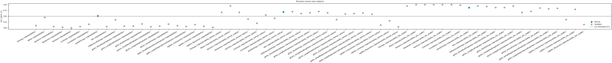
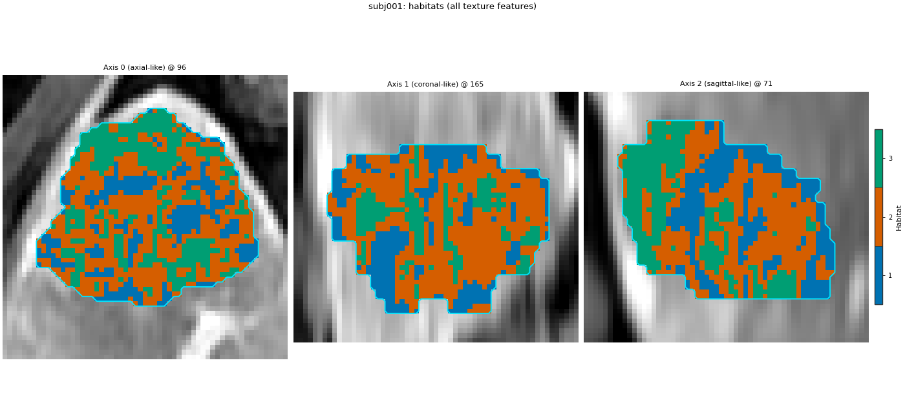
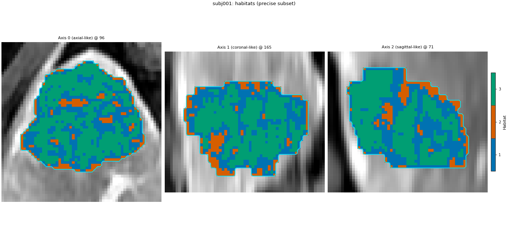
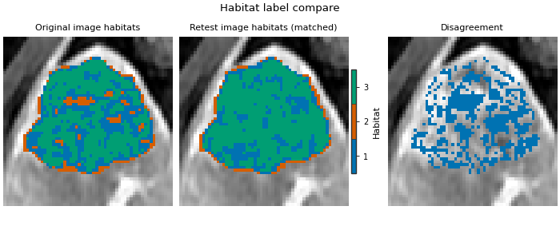
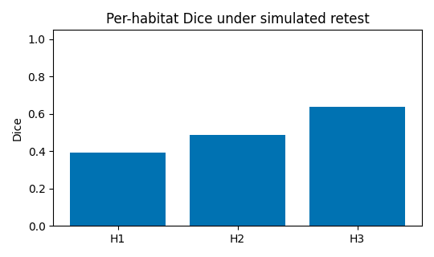

Note
Go to the end to download the full example code.
Precise features and habitat stability
Background. Voxel-wise texture features are noisy. Clustering on features that flip under a simulated re-acquisition produces habitats nobody can reproduce. Prior et al. (Radiol Artif Intell 2024;6(2):e230118) keep only features whose lower confidence limit (LCL) of ICC clears a threshold under three experiments: repeatability (original vs simulated retest), kernel-radius reproducibility, and bin-width reproducibility. The same page then asks whether the habitat map stays stable when the image is lightly perturbed.
Purpose. You will screen a small first-order + GLCM set on one demo patient, fit one-step habitats on that patient with all features versus only the precise subset, and score per-habitat Dice under a simulated retest of the image (noise then small translation then small rotation).
When to use. Before committing a voxel-texture habitat study, and when a reviewer asks which features and how stable the maps are under rescan-like noise.
Key terms. Full definitions are on Concepts.
simulated retest – a stronger rescan-like chain than the mild Appendix S2 defaults used elsewhere: Gaussian noise with an explicit
sigma, then a multi-voxel translation, then several degrees of rotation, on the intensity volume (mask unchanged). The point of this page is to make disagreement without precise screening visible.precision panel – per-feature ICC with confidence limits on the voxels of one subject (or aggregated across subjects).
precise feature – a feature whose LCL clears the threshold in every experiment that was run (here LCL >= 0.5).
feature whitelist – preprocessor that drops every column except the precise names, so clustering uses exactly that subset.
habitat stability – per-habitat Dice after Hungarian matching of independently fitted label maps of the same subject.
This page is not the approved intensity two-step definition: it is a one-step texture screen on a single sequence. Subject-level winsorize 1 % + z-score is kept; cohort binning is omitted (one-step, one patient).
Note
One patient and a short feature list are a demo of the mechanics. A published precise-feature set needs the paper’s full feature list, many patients, and the reported LCL threshold of your study.
Change DATA / MODALITIES / ROI to your preprocessed tree.
Load one patient and one sequence
LAP alone keeps voxel texture extraction interactive. The screen and the habitat fits all use this single subject. sphinx_gallery_thumbnail_number = 3
from pathlib import Path
from typing import Any, Dict, Tuple
import matplotlib.pyplot as plt
import numpy as np
import pandas as pd
from habit.contracts import Cohort, cohort_from_directory
from habit.datasets import fetch_demo
from habit.precision import (
aggregate_panels,
align_habitat_map,
habitat_stability,
identify_precise_features,
perturb_image,
precision_panel,
)
from habit.execution import backend_from_policy
from habit.recipes import Study
from habit.spec import HabitatSpec, Spec, Stage
from habit.spec.policy import RunPolicy
from habit.viz import (
plot_habitat_label_compare,
plot_habitat_overlay,
plot_precision_icc,
)
from habit.voxel_features import extract_voxel_texture
# Change DATA / MODALITIES / ROI to your preprocessed layout.
DATA = fetch_demo()
MODALITIES = ("LAP",)
ROI = "LAP"
cohort = cohort_from_directory(DATA, modalities=MODALITIES, roi=ROI)[:1]
subject = cohort[0]
image = subject.image(MODALITIES[0])
mask = subject.mask(ROI)
print(subject)
Path("out").mkdir(exist_ok=True)
HABIT demo data (cached)
DATA (preprocessed root): C:\Users\dongm\.habit_data\demo-data-v1\preprocessed
On-disk inventory of this folder:
subjects (5): subj001, subj002, subj003, subj004, subj005
image series: LAP, PVP, delay_3min, pre_contrast
mask keys: LAP, PVP, delay_3min, pre_contrast
example image: images/subj001/delay_3min/WATER__BH_Ax_LAVA_Flex_3min_Series0012.nrrd
example mask: masks/subj001/delay_3min/WATER__BH_Ax_LAVA_Flex_10min_Series0017_mask.nrrd
Your own data must use the same folder tree (change IDs / series names):
DATA/
images/<subject_id>/<modality>/<one image file>
masks/<subject_id>/<roi>/<one mask file>
Then load it with the same call the demos use:
cohort = cohort_from_directory(DATA, modalities=("LAP",), roi="LAP")
Swap DATA / modalities / roi to match your tree. Mask key is often the
same as one image series (here LAP).
Subject(subject_id='subj001', images={'LAP': <habit.adapters.image_refs.FileImageRef object at 0x000001F79C90F640>}, masks={'LAP': <habit.adapters.image_refs.FileImageRef object at 0x000001F79C90FA90>}, metadata={})
Simulated retest of the image
Stronger than the mild Appendix S2 defaults so habitats without the precise whitelist disagree in a way you can see in the Dice table. One RNG advances through the chain.
retest_rng = np.random.default_rng(7)
noisy = perturb_image(
image,
method="gaussian_noise",
sigma=float(np.nanstd(image.data)) * 0.15,
rng=retest_rng,
)
shifted = perturb_image(
noisy,
method="translation",
shift_voxels=(2.0, 1.5, 1.0),
rng=retest_rng,
)
perturbed = perturb_image(
shifted,
method="rotation",
angle_degrees=5.0,
rng=retest_rng,
)
print(
"retest chain: gaussian_noise(sigma=0.15*std) -> "
"translation(2,1.5,1 voxels) -> rotation(5 deg)"
)
print("grid unchanged:", perturbed.data.shape == image.data.shape)
retest chain: gaussian_noise(sigma=0.15*std) -> translation(2,1.5,1 voxels) -> rotation(5 deg)
grid unchanged: True
Extract a small texture set at three settings
Base setting R1B25 (kernel radius 1, bin width 25) plus the two reproducibility siblings (R3 and B12). Radius 1 keeps this page fast; use the paper’s R3B12 base when you reproduce Prior et al. fully.
FEATURE_CLASSES: Dict[str, Tuple[str, ...]] = {
"firstorder": ("Entropy", "Mean", "Variance", "Skewness", "Kurtosis"),
"glcm": (
"Contrast",
"Correlation",
"JointEntropy",
"Idm",
"DifferenceEntropy",
),
"glrlm": ("ShortRunEmphasis", "LongRunEmphasis", "RunEntropy"),
"glszm": ("SmallAreaEmphasis", "LargeAreaEmphasis", "ZoneEntropy"),
"gldm": ("SmallDependenceEmphasis", "LargeDependenceEmphasis"),
"ngtdm": ("Coarseness", "Contrast", "Busyness"),
}
feat_r1 = extract_voxel_texture(
image, mask, kernel_radius=1, bin_width=25, feature_classes=FEATURE_CLASSES
)
feat_r3 = extract_voxel_texture(
image, mask, kernel_radius=3, bin_width=25, feature_classes=FEATURE_CLASSES
)
feat_b12 = extract_voxel_texture(
image, mask, kernel_radius=1, bin_width=12, feature_classes=FEATURE_CLASSES
)
feat_pert = extract_voxel_texture(
perturbed, mask, kernel_radius=1, bin_width=25, feature_classes=FEATURE_CLASSES
)
print("features:", list(feat_r1.feature_names))
print("voxels:", feat_r1.values.shape[0])
voxel_radiomics: firstorder batch 1/35 0.012s peak=15MiB
voxel_radiomics: firstorder batch 2/35 0.009s peak=15MiB
voxel_radiomics: firstorder batch 3/35 0.012s peak=15MiB
voxel_radiomics: firstorder batch 4/35 0.007s peak=15MiB
voxel_radiomics: firstorder batch 5/35 0.060s peak=15MiB
voxel_radiomics: firstorder batch 6/35 0.003s peak=15MiB
voxel_radiomics: firstorder batch 7/35 0.004s peak=15MiB
voxel_radiomics: firstorder batch 8/35 0.003s peak=15MiB
voxel_radiomics: firstorder batch 9/35 0.003s peak=15MiB
voxel_radiomics: firstorder batch 10/35 0.003s peak=15MiB
voxel_radiomics: firstorder batch 11/35 0.004s peak=15MiB
voxel_radiomics: firstorder batch 12/35 0.003s peak=15MiB
voxel_radiomics: firstorder batch 13/35 0.003s peak=15MiB
voxel_radiomics: firstorder batch 14/35 0.004s peak=15MiB
voxel_radiomics: firstorder batch 15/35 0.003s peak=15MiB
voxel_radiomics: firstorder batch 16/35 0.004s peak=15MiB
voxel_radiomics: firstorder batch 17/35 0.003s peak=15MiB
voxel_radiomics: firstorder batch 18/35 0.003s peak=15MiB
voxel_radiomics: firstorder batch 19/35 0.003s peak=15MiB
voxel_radiomics: firstorder batch 20/35 0.004s peak=15MiB
voxel_radiomics: firstorder batch 21/35 0.003s peak=15MiB
voxel_radiomics: firstorder batch 22/35 0.004s peak=15MiB
voxel_radiomics: firstorder batch 23/35 0.004s peak=15MiB
voxel_radiomics: firstorder batch 24/35 0.003s peak=15MiB
voxel_radiomics: firstorder batch 25/35 0.004s peak=15MiB
voxel_radiomics: firstorder batch 26/35 0.003s peak=15MiB
voxel_radiomics: firstorder batch 27/35 0.005s peak=15MiB
voxel_radiomics: firstorder batch 28/35 0.003s peak=15MiB
voxel_radiomics: firstorder batch 29/35 0.004s peak=15MiB
voxel_radiomics: firstorder batch 30/35 0.003s peak=15MiB
voxel_radiomics: firstorder batch 31/35 0.004s peak=15MiB
voxel_radiomics: firstorder batch 32/35 0.003s peak=15MiB
voxel_radiomics: firstorder batch 33/35 0.003s peak=15MiB
voxel_radiomics: firstorder batch 34/35 0.004s peak=15MiB
voxel_radiomics: firstorder batch 35/35 0.003s peak=15MiB
voxel_radiomics: glcm batch 1/35 0.024s peak=13MiB
voxel_radiomics: glcm batch 2/35 0.019s peak=14MiB
voxel_radiomics: glcm batch 3/35 0.019s peak=15MiB
voxel_radiomics: glcm batch 4/35 0.017s peak=16MiB
voxel_radiomics: glcm batch 5/35 0.018s peak=17MiB
voxel_radiomics: glcm batch 6/35 0.018s peak=18MiB
voxel_radiomics: glcm batch 7/35 0.019s peak=19MiB
voxel_radiomics: glcm batch 8/35 0.022s peak=20MiB
voxel_radiomics: glcm batch 9/35 0.019s peak=21MiB
voxel_radiomics: glcm batch 10/35 0.018s peak=22MiB
voxel_radiomics: glcm batch 11/35 0.018s peak=22MiB
voxel_radiomics: glcm batch 12/35 0.019s peak=23MiB
voxel_radiomics: glcm batch 13/35 0.018s peak=24MiB
voxel_radiomics: glcm batch 14/35 0.018s peak=25MiB
voxel_radiomics: glcm batch 15/35 0.017s peak=26MiB
voxel_radiomics: glcm batch 16/35 0.018s peak=1MiB
voxel_radiomics: glcm batch 17/35 0.017s peak=2MiB
voxel_radiomics: glcm batch 18/35 0.018s peak=3MiB
voxel_radiomics: glcm batch 19/35 0.015s peak=4MiB
voxel_radiomics: glcm batch 20/35 0.017s peak=5MiB
voxel_radiomics: glcm batch 21/35 0.017s peak=5MiB
voxel_radiomics: glcm batch 22/35 0.018s peak=6MiB
voxel_radiomics: glcm batch 23/35 0.016s peak=7MiB
voxel_radiomics: glcm batch 24/35 0.015s peak=8MiB
voxel_radiomics: glcm batch 25/35 0.018s peak=9MiB
voxel_radiomics: glcm batch 26/35 0.018s peak=10MiB
voxel_radiomics: glcm batch 27/35 0.018s peak=11MiB
voxel_radiomics: glcm batch 28/35 0.018s peak=12MiB
voxel_radiomics: glcm batch 29/35 0.021s peak=13MiB
voxel_radiomics: glcm batch 30/35 0.016s peak=14MiB
voxel_radiomics: glcm batch 31/35 0.018s peak=14MiB
voxel_radiomics: glcm batch 32/35 0.017s peak=15MiB
voxel_radiomics: glcm batch 33/35 0.020s peak=16MiB
voxel_radiomics: glcm batch 34/35 0.020s peak=17MiB
voxel_radiomics: glcm batch 35/35 0.019s peak=18MiB
voxel_radiomics: glrlm batch 1/35 0.018s peak=19MiB
voxel_radiomics: glrlm batch 2/35 0.017s peak=20MiB
voxel_radiomics: glrlm batch 3/35 0.018s peak=21MiB
voxel_radiomics: glrlm batch 4/35 0.017s peak=22MiB
voxel_radiomics: glrlm batch 5/35 0.020s peak=23MiB
voxel_radiomics: glrlm batch 6/35 0.020s peak=23MiB
voxel_radiomics: glrlm batch 7/35 0.017s peak=24MiB
voxel_radiomics: glrlm batch 8/35 0.018s peak=25MiB
voxel_radiomics: glrlm batch 9/35 0.021s peak=26MiB
voxel_radiomics: glrlm batch 10/35 0.018s peak=27MiB
voxel_radiomics: glrlm batch 11/35 0.019s peak=28MiB
voxel_radiomics: glrlm batch 12/35 0.021s peak=29MiB
voxel_radiomics: glrlm batch 13/35 0.020s peak=30MiB
voxel_radiomics: glrlm batch 14/35 0.021s peak=31MiB
voxel_radiomics: glrlm batch 15/35 0.017s peak=32MiB
voxel_radiomics: glrlm batch 16/35 0.017s peak=32MiB
voxel_radiomics: glrlm batch 17/35 0.016s peak=33MiB
voxel_radiomics: glrlm batch 18/35 0.019s peak=34MiB
voxel_radiomics: glrlm batch 19/35 0.017s peak=35MiB
voxel_radiomics: glrlm batch 20/35 0.016s peak=36MiB
voxel_radiomics: glrlm batch 21/35 0.017s peak=37MiB
voxel_radiomics: glrlm batch 22/35 0.017s peak=38MiB
voxel_radiomics: glrlm batch 23/35 0.018s peak=39MiB
voxel_radiomics: glrlm batch 24/35 0.016s peak=40MiB
voxel_radiomics: glrlm batch 25/35 0.017s peak=41MiB
voxel_radiomics: glrlm batch 26/35 0.016s peak=41MiB
voxel_radiomics: glrlm batch 27/35 0.019s peak=42MiB
voxel_radiomics: glrlm batch 28/35 0.017s peak=43MiB
voxel_radiomics: glrlm batch 29/35 0.019s peak=44MiB
voxel_radiomics: glrlm batch 30/35 0.018s peak=45MiB
voxel_radiomics: glrlm batch 31/35 0.018s peak=46MiB
voxel_radiomics: glrlm batch 32/35 0.017s peak=47MiB
voxel_radiomics: glrlm batch 33/35 0.018s peak=48MiB
voxel_radiomics: glrlm batch 34/35 0.017s peak=49MiB
voxel_radiomics: glrlm batch 35/35 0.014s peak=50MiB
voxel_radiomics: glszm batch 1/35 0.016s peak=50MiB
voxel_radiomics: glszm batch 2/35 0.015s peak=51MiB
voxel_radiomics: glszm batch 3/35 0.014s peak=52MiB
voxel_radiomics: glszm batch 4/35 0.014s peak=53MiB
voxel_radiomics: glszm batch 5/35 0.015s peak=54MiB
voxel_radiomics: glszm batch 6/35 0.015s peak=55MiB
voxel_radiomics: glszm batch 7/35 0.015s peak=56MiB
voxel_radiomics: glszm batch 8/35 0.016s peak=57MiB
voxel_radiomics: glszm batch 9/35 0.015s peak=58MiB
voxel_radiomics: glszm batch 10/35 0.019s peak=1MiB
voxel_radiomics: glszm batch 11/35 0.014s peak=2MiB
voxel_radiomics: glszm batch 12/35 0.013s peak=3MiB
voxel_radiomics: glszm batch 13/35 0.013s peak=4MiB
voxel_radiomics: glszm batch 14/35 0.015s peak=5MiB
voxel_radiomics: glszm batch 15/35 0.015s peak=5MiB
voxel_radiomics: glszm batch 16/35 0.016s peak=6MiB
voxel_radiomics: glszm batch 17/35 0.015s peak=7MiB
voxel_radiomics: glszm batch 18/35 0.014s peak=8MiB
voxel_radiomics: glszm batch 19/35 0.014s peak=9MiB
voxel_radiomics: glszm batch 20/35 0.015s peak=10MiB
voxel_radiomics: glszm batch 21/35 0.016s peak=11MiB
voxel_radiomics: glszm batch 22/35 0.019s peak=12MiB
voxel_radiomics: glszm batch 23/35 0.018s peak=13MiB
voxel_radiomics: glszm batch 24/35 0.016s peak=14MiB
voxel_radiomics: glszm batch 25/35 0.016s peak=14MiB
voxel_radiomics: glszm batch 26/35 0.017s peak=15MiB
voxel_radiomics: glszm batch 27/35 0.016s peak=16MiB
voxel_radiomics: glszm batch 28/35 0.015s peak=17MiB
voxel_radiomics: glszm batch 29/35 0.015s peak=18MiB
voxel_radiomics: glszm batch 30/35 0.015s peak=19MiB
voxel_radiomics: glszm batch 31/35 0.017s peak=20MiB
voxel_radiomics: glszm batch 32/35 0.015s peak=21MiB
voxel_radiomics: glszm batch 33/35 0.015s peak=22MiB
voxel_radiomics: glszm batch 34/35 0.015s peak=23MiB
voxel_radiomics: glszm batch 35/35 0.014s peak=23MiB
voxel_radiomics: gldm batch 1/35 0.007s peak=29MiB
voxel_radiomics: gldm batch 2/35 0.007s peak=31MiB
voxel_radiomics: gldm batch 3/35 0.007s peak=32MiB
voxel_radiomics: gldm batch 4/35 0.007s peak=33MiB
voxel_radiomics: gldm batch 5/35 0.008s peak=34MiB
voxel_radiomics: gldm batch 6/35 0.010s peak=35MiB
voxel_radiomics: gldm batch 7/35 0.007s peak=35MiB
voxel_radiomics: gldm batch 8/35 0.007s peak=36MiB
voxel_radiomics: gldm batch 9/35 0.007s peak=38MiB
voxel_radiomics: gldm batch 10/35 0.007s peak=38MiB
voxel_radiomics: gldm batch 11/35 0.007s peak=39MiB
voxel_radiomics: gldm batch 12/35 0.007s peak=40MiB
voxel_radiomics: gldm batch 13/35 0.007s peak=42MiB
voxel_radiomics: gldm batch 14/35 0.006s peak=42MiB
voxel_radiomics: gldm batch 15/35 0.007s peak=46MiB
voxel_radiomics: gldm batch 16/35 0.007s peak=45MiB
voxel_radiomics: gldm batch 17/35 0.007s peak=46MiB
voxel_radiomics: gldm batch 18/35 0.007s peak=47MiB
voxel_radiomics: gldm batch 19/35 0.007s peak=48MiB
voxel_radiomics: gldm batch 20/35 0.007s peak=48MiB
voxel_radiomics: gldm batch 21/35 0.008s peak=49MiB
voxel_radiomics: gldm batch 22/35 0.008s peak=50MiB
voxel_radiomics: gldm batch 23/35 0.008s peak=51MiB
voxel_radiomics: gldm batch 24/35 0.008s peak=52MiB
voxel_radiomics: gldm batch 25/35 0.008s peak=53MiB
voxel_radiomics: gldm batch 26/35 0.007s peak=54MiB
voxel_radiomics: gldm batch 27/35 0.007s peak=54MiB
voxel_radiomics: gldm batch 28/35 0.007s peak=56MiB
voxel_radiomics: gldm batch 29/35 0.008s peak=56MiB
voxel_radiomics: gldm batch 30/35 0.007s peak=56MiB
voxel_radiomics: gldm batch 31/35 0.008s peak=57MiB
voxel_radiomics: gldm batch 32/35 0.007s peak=58MiB
voxel_radiomics: gldm batch 33/35 0.007s peak=60MiB
voxel_radiomics: gldm batch 34/35 0.007s peak=60MiB
voxel_radiomics: gldm batch 35/35 0.008s peak=59MiB
voxel_radiomics: ngtdm batch 1/35 0.011s peak=57MiB
voxel_radiomics: ngtdm batch 2/35 0.009s peak=58MiB
voxel_radiomics: ngtdm batch 3/35 0.008s peak=59MiB
voxel_radiomics: ngtdm batch 4/35 0.010s peak=2MiB
voxel_radiomics: ngtdm batch 5/35 0.008s peak=3MiB
voxel_radiomics: ngtdm batch 6/35 0.009s peak=4MiB
voxel_radiomics: ngtdm batch 7/35 0.010s peak=5MiB
voxel_radiomics: ngtdm batch 8/35 0.009s peak=6MiB
voxel_radiomics: ngtdm batch 9/35 0.009s peak=7MiB
voxel_radiomics: ngtdm batch 10/35 0.009s peak=8MiB
voxel_radiomics: ngtdm batch 11/35 0.008s peak=9MiB
voxel_radiomics: ngtdm batch 12/35 0.008s peak=10MiB
voxel_radiomics: ngtdm batch 13/35 0.009s peak=11MiB
voxel_radiomics: ngtdm batch 14/35 0.009s peak=11MiB
voxel_radiomics: ngtdm batch 15/35 0.009s peak=12MiB
voxel_radiomics: ngtdm batch 16/35 0.009s peak=13MiB
voxel_radiomics: ngtdm batch 17/35 0.008s peak=14MiB
voxel_radiomics: ngtdm batch 18/35 0.009s peak=15MiB
voxel_radiomics: ngtdm batch 19/35 0.009s peak=16MiB
voxel_radiomics: ngtdm batch 20/35 0.009s peak=17MiB
voxel_radiomics: ngtdm batch 21/35 0.009s peak=18MiB
voxel_radiomics: ngtdm batch 22/35 0.009s peak=19MiB
voxel_radiomics: ngtdm batch 23/35 0.008s peak=20MiB
voxel_radiomics: ngtdm batch 24/35 0.008s peak=21MiB
voxel_radiomics: ngtdm batch 25/35 0.008s peak=21MiB
voxel_radiomics: ngtdm batch 26/35 0.008s peak=22MiB
voxel_radiomics: ngtdm batch 27/35 0.009s peak=23MiB
voxel_radiomics: ngtdm batch 28/35 0.009s peak=24MiB
voxel_radiomics: ngtdm batch 29/35 0.009s peak=25MiB
voxel_radiomics: ngtdm batch 30/35 0.010s peak=26MiB
voxel_radiomics: ngtdm batch 31/35 0.008s peak=27MiB
voxel_radiomics: ngtdm batch 32/35 0.009s peak=28MiB
voxel_radiomics: ngtdm batch 33/35 0.009s peak=28MiB
voxel_radiomics: ngtdm batch 34/35 0.007s peak=29MiB
voxel_radiomics: ngtdm batch 35/35 0.008s peak=30MiB
voxel_radiomics: firstorder batch 1/35 0.018s peak=35MiB
voxel_radiomics: firstorder batch 2/35 0.007s peak=35MiB
voxel_radiomics: firstorder batch 3/35 0.007s peak=35MiB
voxel_radiomics: firstorder batch 4/35 0.006s peak=35MiB
voxel_radiomics: firstorder batch 5/35 0.007s peak=35MiB
voxel_radiomics: firstorder batch 6/35 0.006s peak=35MiB
voxel_radiomics: firstorder batch 7/35 0.008s peak=35MiB
voxel_radiomics: firstorder batch 8/35 0.007s peak=35MiB
voxel_radiomics: firstorder batch 9/35 0.010s peak=35MiB
voxel_radiomics: firstorder batch 10/35 0.006s peak=35MiB
voxel_radiomics: firstorder batch 11/35 0.010s peak=35MiB
voxel_radiomics: firstorder batch 12/35 0.007s peak=35MiB
voxel_radiomics: firstorder batch 13/35 0.007s peak=35MiB
voxel_radiomics: firstorder batch 14/35 0.006s peak=35MiB
voxel_radiomics: firstorder batch 15/35 0.011s peak=35MiB
voxel_radiomics: firstorder batch 16/35 0.006s peak=35MiB
voxel_radiomics: firstorder batch 17/35 0.007s peak=35MiB
voxel_radiomics: firstorder batch 18/35 0.005s peak=35MiB
voxel_radiomics: firstorder batch 19/35 0.008s peak=35MiB
voxel_radiomics: firstorder batch 20/35 0.007s peak=35MiB
voxel_radiomics: firstorder batch 21/35 0.020s peak=35MiB
voxel_radiomics: firstorder batch 22/35 0.006s peak=35MiB
voxel_radiomics: firstorder batch 23/35 0.005s peak=35MiB
voxel_radiomics: firstorder batch 24/35 0.006s peak=35MiB
voxel_radiomics: firstorder batch 25/35 0.005s peak=35MiB
voxel_radiomics: firstorder batch 26/35 0.007s peak=35MiB
voxel_radiomics: firstorder batch 27/35 0.006s peak=35MiB
voxel_radiomics: firstorder batch 28/35 0.007s peak=35MiB
voxel_radiomics: firstorder batch 29/35 0.006s peak=35MiB
voxel_radiomics: firstorder batch 30/35 0.005s peak=35MiB
voxel_radiomics: firstorder batch 31/35 0.007s peak=35MiB
voxel_radiomics: firstorder batch 32/35 0.006s peak=35MiB
voxel_radiomics: firstorder batch 33/35 0.008s peak=35MiB
voxel_radiomics: firstorder batch 34/35 0.007s peak=35MiB
voxel_radiomics: firstorder batch 35/35 0.006s peak=34MiB
voxel_radiomics: glcm batch 1/35 0.050s peak=30MiB
voxel_radiomics: glcm batch 2/35 0.043s peak=31MiB
voxel_radiomics: glcm batch 3/35 0.043s peak=32MiB
voxel_radiomics: glcm batch 4/35 0.040s peak=33MiB
voxel_radiomics: glcm batch 5/35 0.045s peak=35MiB
voxel_radiomics: glcm batch 6/35 0.042s peak=36MiB
voxel_radiomics: glcm batch 7/35 0.044s peak=37MiB
voxel_radiomics: glcm batch 8/35 0.043s peak=38MiB
voxel_radiomics: glcm batch 9/35 0.041s peak=39MiB
voxel_radiomics: glcm batch 10/35 0.043s peak=40MiB
voxel_radiomics: glcm batch 11/35 0.044s peak=41MiB
voxel_radiomics: glcm batch 12/35 0.042s peak=43MiB
voxel_radiomics: glcm batch 13/35 0.042s peak=44MiB
voxel_radiomics: glcm batch 14/35 0.043s peak=45MiB
voxel_radiomics: glcm batch 15/35 0.042s peak=46MiB
voxel_radiomics: glcm batch 16/35 0.040s peak=47MiB
voxel_radiomics: glcm batch 17/35 0.044s peak=48MiB
voxel_radiomics: glcm batch 18/35 0.044s peak=50MiB
voxel_radiomics: glcm batch 19/35 0.043s peak=51MiB
voxel_radiomics: glcm batch 20/35 0.043s peak=52MiB
voxel_radiomics: glcm batch 21/35 0.042s peak=53MiB
voxel_radiomics: glcm batch 22/35 0.040s peak=54MiB
voxel_radiomics: glcm batch 23/35 0.041s peak=55MiB
voxel_radiomics: glcm batch 24/35 0.042s peak=56MiB
voxel_radiomics: glcm batch 25/35 0.040s peak=58MiB
voxel_radiomics: glcm batch 26/35 0.040s peak=59MiB
voxel_radiomics: glcm batch 27/35 0.038s peak=60MiB
voxel_radiomics: glcm batch 28/35 0.040s peak=61MiB
voxel_radiomics: glcm batch 29/35 0.039s peak=62MiB
voxel_radiomics: glcm batch 30/35 0.042s peak=63MiB
voxel_radiomics: glcm batch 31/35 0.039s peak=64MiB
voxel_radiomics: glcm batch 32/35 0.037s peak=66MiB
voxel_radiomics: glcm batch 33/35 0.037s peak=1MiB
voxel_radiomics: glcm batch 34/35 0.036s peak=2MiB
voxel_radiomics: glcm batch 35/35 0.029s peak=4MiB
voxel_radiomics: glrlm batch 1/35 0.069s peak=5MiB
voxel_radiomics: glrlm batch 2/35 0.129s peak=6MiB
voxel_radiomics: glrlm batch 3/35 0.071s peak=7MiB
voxel_radiomics: glrlm batch 4/35 0.073s peak=8MiB
voxel_radiomics: glrlm batch 5/35 0.074s peak=9MiB
voxel_radiomics: glrlm batch 6/35 0.075s peak=10MiB
voxel_radiomics: glrlm batch 7/35 0.070s peak=12MiB
voxel_radiomics: glrlm batch 8/35 0.066s peak=13MiB
voxel_radiomics: glrlm batch 9/35 0.064s peak=14MiB
voxel_radiomics: glrlm batch 10/35 0.069s peak=15MiB
voxel_radiomics: glrlm batch 11/35 0.083s peak=16MiB
voxel_radiomics: glrlm batch 12/35 0.072s peak=17MiB
voxel_radiomics: glrlm batch 13/35 0.070s peak=18MiB
voxel_radiomics: glrlm batch 14/35 0.073s peak=20MiB
voxel_radiomics: glrlm batch 15/35 0.072s peak=21MiB
voxel_radiomics: glrlm batch 16/35 0.071s peak=22MiB
voxel_radiomics: glrlm batch 17/35 0.071s peak=23MiB
voxel_radiomics: glrlm batch 18/35 0.072s peak=24MiB
voxel_radiomics: glrlm batch 19/35 0.077s peak=25MiB
voxel_radiomics: glrlm batch 20/35 0.076s peak=27MiB
voxel_radiomics: glrlm batch 21/35 0.071s peak=28MiB
voxel_radiomics: glrlm batch 22/35 0.087s peak=29MiB
voxel_radiomics: glrlm batch 23/35 0.070s peak=30MiB
voxel_radiomics: glrlm batch 24/35 0.071s peak=31MiB
voxel_radiomics: glrlm batch 25/35 0.071s peak=32MiB
voxel_radiomics: glrlm batch 26/35 0.072s peak=33MiB
voxel_radiomics: glrlm batch 27/35 0.075s peak=35MiB
voxel_radiomics: glrlm batch 28/35 0.071s peak=36MiB
voxel_radiomics: glrlm batch 29/35 0.068s peak=37MiB
voxel_radiomics: glrlm batch 30/35 0.093s peak=38MiB
voxel_radiomics: glrlm batch 31/35 0.070s peak=39MiB
voxel_radiomics: glrlm batch 32/35 0.071s peak=40MiB
voxel_radiomics: glrlm batch 33/35 0.070s peak=41MiB
voxel_radiomics: glrlm batch 34/35 0.059s peak=43MiB
voxel_radiomics: glrlm batch 35/35 0.037s peak=44MiB
voxel_radiomics: glszm batch 1/35 0.039s peak=46MiB
voxel_radiomics: glszm batch 2/35 0.032s peak=47MiB
voxel_radiomics: glszm batch 3/35 0.035s peak=48MiB
voxel_radiomics: glszm batch 4/35 0.036s peak=50MiB
voxel_radiomics: glszm batch 5/35 0.037s peak=51MiB
voxel_radiomics: glszm batch 6/35 0.039s peak=52MiB
voxel_radiomics: glszm batch 7/35 0.034s peak=53MiB
voxel_radiomics: glszm batch 8/35 0.032s peak=54MiB
voxel_radiomics: glszm batch 9/35 0.034s peak=55MiB
voxel_radiomics: glszm batch 10/35 0.034s peak=56MiB
voxel_radiomics: glszm batch 11/35 0.035s peak=58MiB
voxel_radiomics: glszm batch 12/35 0.033s peak=59MiB
voxel_radiomics: glszm batch 13/35 0.031s peak=60MiB
voxel_radiomics: glszm batch 14/35 0.031s peak=61MiB
voxel_radiomics: glszm batch 15/35 0.033s peak=62MiB
voxel_radiomics: glszm batch 16/35 0.034s peak=63MiB
voxel_radiomics: glszm batch 17/35 0.032s peak=65MiB
voxel_radiomics: glszm batch 18/35 0.032s peak=66MiB
voxel_radiomics: glszm batch 19/35 0.029s peak=67MiB
voxel_radiomics: glszm batch 20/35 0.031s peak=68MiB
voxel_radiomics: glszm batch 21/35 0.034s peak=69MiB
voxel_radiomics: glszm batch 22/35 0.032s peak=70MiB
voxel_radiomics: glszm batch 23/35 0.034s peak=71MiB
voxel_radiomics: glszm batch 24/35 0.033s peak=73MiB
voxel_radiomics: glszm batch 25/35 0.030s peak=74MiB
voxel_radiomics: glszm batch 26/35 0.034s peak=75MiB
voxel_radiomics: glszm batch 27/35 0.037s peak=2MiB
voxel_radiomics: glszm batch 28/35 0.033s peak=4MiB
voxel_radiomics: glszm batch 29/35 0.035s peak=5MiB
voxel_radiomics: glszm batch 30/35 0.032s peak=6MiB
voxel_radiomics: glszm batch 31/35 0.034s peak=7MiB
voxel_radiomics: glszm batch 32/35 0.033s peak=8MiB
voxel_radiomics: glszm batch 33/35 0.032s peak=9MiB
voxel_radiomics: glszm batch 34/35 0.031s peak=11MiB
voxel_radiomics: glszm batch 35/35 0.027s peak=11MiB
voxel_radiomics: gldm batch 1/35 0.011s peak=18MiB
voxel_radiomics: gldm batch 2/35 0.009s peak=20MiB
voxel_radiomics: gldm batch 3/35 0.010s peak=21MiB
voxel_radiomics: gldm batch 4/35 0.011s peak=22MiB
voxel_radiomics: gldm batch 5/35 0.012s peak=23MiB
voxel_radiomics: gldm batch 6/35 0.010s peak=24MiB
voxel_radiomics: gldm batch 7/35 0.011s peak=25MiB
voxel_radiomics: gldm batch 8/35 0.010s peak=26MiB
voxel_radiomics: gldm batch 9/35 0.010s peak=28MiB
voxel_radiomics: gldm batch 10/35 0.011s peak=29MiB
voxel_radiomics: gldm batch 11/35 0.012s peak=31MiB
voxel_radiomics: gldm batch 12/35 0.010s peak=33MiB
voxel_radiomics: gldm batch 13/35 0.010s peak=34MiB
voxel_radiomics: gldm batch 14/35 0.011s peak=36MiB
voxel_radiomics: gldm batch 15/35 0.010s peak=37MiB
voxel_radiomics: gldm batch 16/35 0.010s peak=38MiB
voxel_radiomics: gldm batch 17/35 0.010s peak=39MiB
voxel_radiomics: gldm batch 18/35 0.010s peak=40MiB
voxel_radiomics: gldm batch 19/35 0.010s peak=41MiB
voxel_radiomics: gldm batch 20/35 0.009s peak=42MiB
voxel_radiomics: gldm batch 21/35 0.009s peak=43MiB
voxel_radiomics: gldm batch 22/35 0.009s peak=44MiB
voxel_radiomics: gldm batch 23/35 0.010s peak=45MiB
voxel_radiomics: gldm batch 24/35 0.009s peak=46MiB
voxel_radiomics: gldm batch 25/35 0.010s peak=47MiB
voxel_radiomics: gldm batch 26/35 0.011s peak=49MiB
voxel_radiomics: gldm batch 27/35 0.009s peak=50MiB
voxel_radiomics: gldm batch 28/35 0.011s peak=51MiB
voxel_radiomics: gldm batch 29/35 0.010s peak=52MiB
voxel_radiomics: gldm batch 30/35 0.009s peak=53MiB
voxel_radiomics: gldm batch 31/35 0.010s peak=53MiB
voxel_radiomics: gldm batch 32/35 0.011s peak=54MiB
voxel_radiomics: gldm batch 33/35 0.010s peak=56MiB
voxel_radiomics: gldm batch 34/35 0.010s peak=57MiB
voxel_radiomics: gldm batch 35/35 0.008s peak=56MiB
voxel_radiomics: ngtdm batch 1/35 0.011s peak=54MiB
voxel_radiomics: ngtdm batch 2/35 0.012s peak=55MiB
voxel_radiomics: ngtdm batch 3/35 0.014s peak=56MiB
voxel_radiomics: ngtdm batch 4/35 0.012s peak=57MiB
voxel_radiomics: ngtdm batch 5/35 0.010s peak=59MiB
voxel_radiomics: ngtdm batch 6/35 0.011s peak=60MiB
voxel_radiomics: ngtdm batch 7/35 0.013s peak=61MiB
voxel_radiomics: ngtdm batch 8/35 0.013s peak=62MiB
voxel_radiomics: ngtdm batch 9/35 0.011s peak=63MiB
voxel_radiomics: ngtdm batch 10/35 0.011s peak=65MiB
voxel_radiomics: ngtdm batch 11/35 0.012s peak=66MiB
voxel_radiomics: ngtdm batch 12/35 0.013s peak=67MiB
voxel_radiomics: ngtdm batch 13/35 0.012s peak=68MiB
voxel_radiomics: ngtdm batch 14/35 0.012s peak=69MiB
voxel_radiomics: ngtdm batch 15/35 0.012s peak=70MiB
voxel_radiomics: ngtdm batch 16/35 0.012s peak=71MiB
voxel_radiomics: ngtdm batch 17/35 0.013s peak=73MiB
voxel_radiomics: ngtdm batch 18/35 0.011s peak=74MiB
voxel_radiomics: ngtdm batch 19/35 0.011s peak=75MiB
voxel_radiomics: ngtdm batch 20/35 0.012s peak=76MiB
voxel_radiomics: ngtdm batch 21/35 0.014s peak=4MiB
voxel_radiomics: ngtdm batch 22/35 0.012s peak=5MiB
voxel_radiomics: ngtdm batch 23/35 0.011s peak=6MiB
voxel_radiomics: ngtdm batch 24/35 0.011s peak=7MiB
voxel_radiomics: ngtdm batch 25/35 0.011s peak=8MiB
voxel_radiomics: ngtdm batch 26/35 0.011s peak=9MiB
voxel_radiomics: ngtdm batch 27/35 0.012s peak=11MiB
voxel_radiomics: ngtdm batch 28/35 0.011s peak=12MiB
voxel_radiomics: ngtdm batch 29/35 0.011s peak=13MiB
voxel_radiomics: ngtdm batch 30/35 0.013s peak=14MiB
voxel_radiomics: ngtdm batch 31/35 0.012s peak=15MiB
voxel_radiomics: ngtdm batch 32/35 0.010s peak=16MiB
voxel_radiomics: ngtdm batch 33/35 0.012s peak=17MiB
voxel_radiomics: ngtdm batch 34/35 0.013s peak=18MiB
voxel_radiomics: ngtdm batch 35/35 0.010s peak=19MiB
voxel_radiomics: firstorder batch 1/35 0.005s peak=21MiB
voxel_radiomics: firstorder batch 2/35 0.004s peak=21MiB
voxel_radiomics: firstorder batch 3/35 0.003s peak=21MiB
voxel_radiomics: firstorder batch 4/35 0.004s peak=21MiB
voxel_radiomics: firstorder batch 5/35 0.004s peak=21MiB
voxel_radiomics: firstorder batch 6/35 0.003s peak=21MiB
voxel_radiomics: firstorder batch 7/35 0.003s peak=21MiB
voxel_radiomics: firstorder batch 8/35 0.003s peak=21MiB
voxel_radiomics: firstorder batch 9/35 0.004s peak=21MiB
voxel_radiomics: firstorder batch 10/35 0.003s peak=21MiB
voxel_radiomics: firstorder batch 11/35 0.003s peak=21MiB
voxel_radiomics: firstorder batch 12/35 0.003s peak=21MiB
voxel_radiomics: firstorder batch 13/35 0.004s peak=21MiB
voxel_radiomics: firstorder batch 14/35 0.004s peak=21MiB
voxel_radiomics: firstorder batch 15/35 0.004s peak=21MiB
voxel_radiomics: firstorder batch 16/35 0.005s peak=21MiB
voxel_radiomics: firstorder batch 17/35 0.004s peak=21MiB
voxel_radiomics: firstorder batch 18/35 0.003s peak=21MiB
voxel_radiomics: firstorder batch 19/35 0.004s peak=21MiB
voxel_radiomics: firstorder batch 20/35 0.004s peak=21MiB
voxel_radiomics: firstorder batch 21/35 0.004s peak=21MiB
voxel_radiomics: firstorder batch 22/35 0.003s peak=21MiB
voxel_radiomics: firstorder batch 23/35 0.004s peak=21MiB
voxel_radiomics: firstorder batch 24/35 0.005s peak=21MiB
voxel_radiomics: firstorder batch 25/35 0.004s peak=21MiB
voxel_radiomics: firstorder batch 26/35 0.003s peak=21MiB
voxel_radiomics: firstorder batch 27/35 0.004s peak=21MiB
voxel_radiomics: firstorder batch 28/35 0.004s peak=21MiB
voxel_radiomics: firstorder batch 29/35 0.004s peak=21MiB
voxel_radiomics: firstorder batch 30/35 0.004s peak=21MiB
voxel_radiomics: firstorder batch 31/35 0.005s peak=21MiB
voxel_radiomics: firstorder batch 32/35 0.005s peak=21MiB
voxel_radiomics: firstorder batch 33/35 0.005s peak=21MiB
voxel_radiomics: firstorder batch 34/35 0.005s peak=21MiB
voxel_radiomics: firstorder batch 35/35 0.004s peak=21MiB
voxel_radiomics: glcm batch 1/35 0.024s peak=19MiB
voxel_radiomics: glcm batch 2/35 0.021s peak=20MiB
voxel_radiomics: glcm batch 3/35 0.020s peak=21MiB
voxel_radiomics: glcm batch 4/35 0.019s peak=22MiB
voxel_radiomics: glcm batch 5/35 0.019s peak=23MiB
voxel_radiomics: glcm batch 6/35 0.021s peak=24MiB
voxel_radiomics: glcm batch 7/35 0.020s peak=24MiB
voxel_radiomics: glcm batch 8/35 0.021s peak=25MiB
voxel_radiomics: glcm batch 9/35 0.020s peak=26MiB
voxel_radiomics: glcm batch 10/35 0.018s peak=27MiB
voxel_radiomics: glcm batch 11/35 0.020s peak=28MiB
voxel_radiomics: glcm batch 12/35 0.020s peak=29MiB
voxel_radiomics: glcm batch 13/35 0.020s peak=30MiB
voxel_radiomics: glcm batch 14/35 0.020s peak=31MiB
voxel_radiomics: glcm batch 15/35 0.021s peak=32MiB
voxel_radiomics: glcm batch 16/35 0.020s peak=33MiB
voxel_radiomics: glcm batch 17/35 0.021s peak=33MiB
voxel_radiomics: glcm batch 18/35 0.022s peak=34MiB
voxel_radiomics: glcm batch 19/35 0.021s peak=35MiB
voxel_radiomics: glcm batch 20/35 0.020s peak=36MiB
voxel_radiomics: glcm batch 21/35 0.024s peak=37MiB
voxel_radiomics: glcm batch 22/35 0.021s peak=38MiB
voxel_radiomics: glcm batch 23/35 0.021s peak=39MiB
voxel_radiomics: glcm batch 24/35 0.020s peak=40MiB
voxel_radiomics: glcm batch 25/35 0.022s peak=41MiB
voxel_radiomics: glcm batch 26/35 0.021s peak=42MiB
voxel_radiomics: glcm batch 27/35 0.020s peak=42MiB
voxel_radiomics: glcm batch 28/35 0.020s peak=43MiB
voxel_radiomics: glcm batch 29/35 0.021s peak=44MiB
voxel_radiomics: glcm batch 30/35 0.022s peak=45MiB
voxel_radiomics: glcm batch 31/35 0.025s peak=46MiB
voxel_radiomics: glcm batch 32/35 0.023s peak=47MiB
voxel_radiomics: glcm batch 33/35 0.023s peak=48MiB
voxel_radiomics: glcm batch 34/35 0.022s peak=49MiB
voxel_radiomics: glcm batch 35/35 0.019s peak=50MiB
voxel_radiomics: glrlm batch 1/35 0.019s peak=51MiB
voxel_radiomics: glrlm batch 2/35 0.017s peak=51MiB
voxel_radiomics: glrlm batch 3/35 0.017s peak=52MiB
voxel_radiomics: glrlm batch 4/35 0.020s peak=53MiB
voxel_radiomics: glrlm batch 5/35 0.020s peak=54MiB
voxel_radiomics: glrlm batch 6/35 0.020s peak=55MiB
voxel_radiomics: glrlm batch 7/35 0.018s peak=56MiB
voxel_radiomics: glrlm batch 8/35 0.017s peak=57MiB
voxel_radiomics: glrlm batch 9/35 0.017s peak=58MiB
voxel_radiomics: glrlm batch 10/35 0.019s peak=59MiB
voxel_radiomics: glrlm batch 11/35 0.019s peak=59MiB
voxel_radiomics: glrlm batch 12/35 0.019s peak=60MiB
voxel_radiomics: glrlm batch 13/35 0.018s peak=61MiB
voxel_radiomics: glrlm batch 14/35 0.018s peak=62MiB
voxel_radiomics: glrlm batch 15/35 0.020s peak=2MiB
voxel_radiomics: glrlm batch 16/35 0.019s peak=3MiB
voxel_radiomics: glrlm batch 17/35 0.017s peak=4MiB
voxel_radiomics: glrlm batch 18/35 0.018s peak=5MiB
voxel_radiomics: glrlm batch 19/35 0.018s peak=5MiB
voxel_radiomics: glrlm batch 20/35 0.018s peak=6MiB
voxel_radiomics: glrlm batch 21/35 0.017s peak=7MiB
voxel_radiomics: glrlm batch 22/35 0.017s peak=8MiB
voxel_radiomics: glrlm batch 23/35 0.017s peak=9MiB
voxel_radiomics: glrlm batch 24/35 0.018s peak=10MiB
voxel_radiomics: glrlm batch 25/35 0.017s peak=11MiB
voxel_radiomics: glrlm batch 26/35 0.016s peak=12MiB
voxel_radiomics: glrlm batch 27/35 0.017s peak=13MiB
voxel_radiomics: glrlm batch 28/35 0.018s peak=13MiB
voxel_radiomics: glrlm batch 29/35 0.018s peak=14MiB
voxel_radiomics: glrlm batch 30/35 0.016s peak=15MiB
voxel_radiomics: glrlm batch 31/35 0.019s peak=16MiB
voxel_radiomics: glrlm batch 32/35 0.019s peak=17MiB
voxel_radiomics: glrlm batch 33/35 0.019s peak=18MiB
voxel_radiomics: glrlm batch 34/35 0.019s peak=19MiB
voxel_radiomics: glrlm batch 35/35 0.016s peak=20MiB
voxel_radiomics: glszm batch 1/35 0.018s peak=20MiB
voxel_radiomics: glszm batch 2/35 0.019s peak=21MiB
voxel_radiomics: glszm batch 3/35 0.018s peak=22MiB
voxel_radiomics: glszm batch 4/35 0.017s peak=23MiB
voxel_radiomics: glszm batch 5/35 0.017s peak=23MiB
voxel_radiomics: glszm batch 6/35 0.014s peak=24MiB
voxel_radiomics: glszm batch 7/35 0.016s peak=25MiB
voxel_radiomics: glszm batch 8/35 0.015s peak=26MiB
voxel_radiomics: glszm batch 9/35 0.016s peak=27MiB
voxel_radiomics: glszm batch 10/35 0.017s peak=28MiB
voxel_radiomics: glszm batch 11/35 0.017s peak=29MiB
voxel_radiomics: glszm batch 12/35 0.016s peak=30MiB
voxel_radiomics: glszm batch 13/35 0.019s peak=31MiB
voxel_radiomics: glszm batch 14/35 0.018s peak=32MiB
voxel_radiomics: glszm batch 15/35 0.017s peak=32MiB
voxel_radiomics: glszm batch 16/35 0.016s peak=33MiB
voxel_radiomics: glszm batch 17/35 0.018s peak=34MiB
voxel_radiomics: glszm batch 18/35 0.018s peak=35MiB
voxel_radiomics: glszm batch 19/35 0.015s peak=36MiB
voxel_radiomics: glszm batch 20/35 0.015s peak=37MiB
voxel_radiomics: glszm batch 21/35 0.015s peak=38MiB
voxel_radiomics: glszm batch 22/35 0.016s peak=39MiB
voxel_radiomics: glszm batch 23/35 0.018s peak=40MiB
voxel_radiomics: glszm batch 24/35 0.016s peak=41MiB
voxel_radiomics: glszm batch 25/35 0.015s peak=41MiB
voxel_radiomics: glszm batch 26/35 0.016s peak=42MiB
voxel_radiomics: glszm batch 27/35 0.014s peak=43MiB
voxel_radiomics: glszm batch 28/35 0.015s peak=44MiB
voxel_radiomics: glszm batch 29/35 0.014s peak=45MiB
voxel_radiomics: glszm batch 30/35 0.017s peak=46MiB
voxel_radiomics: glszm batch 31/35 0.015s peak=47MiB
voxel_radiomics: glszm batch 32/35 0.016s peak=48MiB
voxel_radiomics: glszm batch 33/35 0.016s peak=49MiB
voxel_radiomics: glszm batch 34/35 0.017s peak=50MiB
voxel_radiomics: glszm batch 35/35 0.015s peak=50MiB
voxel_radiomics: gldm batch 1/35 0.012s peak=58MiB
voxel_radiomics: gldm batch 2/35 0.007s peak=60MiB
voxel_radiomics: gldm batch 3/35 0.008s peak=62MiB
voxel_radiomics: gldm batch 4/35 0.007s peak=61MiB
voxel_radiomics: gldm batch 5/35 0.009s peak=64MiB
voxel_radiomics: gldm batch 6/35 0.009s peak=63MiB
voxel_radiomics: gldm batch 7/35 0.008s peak=64MiB
voxel_radiomics: gldm batch 8/35 0.008s peak=65MiB
voxel_radiomics: gldm batch 9/35 0.009s peak=9MiB
voxel_radiomics: gldm batch 10/35 0.007s peak=9MiB
voxel_radiomics: gldm batch 11/35 0.008s peak=11MiB
voxel_radiomics: gldm batch 12/35 0.007s peak=13MiB
voxel_radiomics: gldm batch 13/35 0.008s peak=13MiB
voxel_radiomics: gldm batch 14/35 0.008s peak=13MiB
voxel_radiomics: gldm batch 15/35 0.007s peak=16MiB
voxel_radiomics: gldm batch 16/35 0.008s peak=18MiB
voxel_radiomics: gldm batch 17/35 0.011s peak=17MiB
voxel_radiomics: gldm batch 18/35 0.009s peak=19MiB
voxel_radiomics: gldm batch 19/35 0.008s peak=20MiB
voxel_radiomics: gldm batch 20/35 0.008s peak=20MiB
voxel_radiomics: gldm batch 21/35 0.008s peak=22MiB
voxel_radiomics: gldm batch 22/35 0.009s peak=22MiB
voxel_radiomics: gldm batch 23/35 0.008s peak=24MiB
voxel_radiomics: gldm batch 24/35 0.007s peak=24MiB
voxel_radiomics: gldm batch 25/35 0.008s peak=25MiB
voxel_radiomics: gldm batch 26/35 0.009s peak=25MiB
voxel_radiomics: gldm batch 27/35 0.008s peak=26MiB
voxel_radiomics: gldm batch 28/35 0.011s peak=27MiB
voxel_radiomics: gldm batch 29/35 0.008s peak=26MiB
voxel_radiomics: gldm batch 30/35 0.008s peak=27MiB
voxel_radiomics: gldm batch 31/35 0.007s peak=28MiB
voxel_radiomics: gldm batch 32/35 0.008s peak=29MiB
voxel_radiomics: gldm batch 33/35 0.007s peak=33MiB
voxel_radiomics: gldm batch 34/35 0.007s peak=33MiB
voxel_radiomics: gldm batch 35/35 0.007s peak=31MiB
voxel_radiomics: ngtdm batch 1/35 0.017s peak=28MiB
voxel_radiomics: ngtdm batch 2/35 0.015s peak=29MiB
voxel_radiomics: ngtdm batch 3/35 0.010s peak=30MiB
voxel_radiomics: ngtdm batch 4/35 0.010s peak=31MiB
voxel_radiomics: ngtdm batch 5/35 0.010s peak=32MiB
voxel_radiomics: ngtdm batch 6/35 0.015s peak=33MiB
voxel_radiomics: ngtdm batch 7/35 0.015s peak=34MiB
voxel_radiomics: ngtdm batch 8/35 0.011s peak=35MiB
voxel_radiomics: ngtdm batch 9/35 0.011s peak=36MiB
voxel_radiomics: ngtdm batch 10/35 0.010s peak=36MiB
voxel_radiomics: ngtdm batch 11/35 0.010s peak=37MiB
voxel_radiomics: ngtdm batch 12/35 0.011s peak=38MiB
voxel_radiomics: ngtdm batch 13/35 0.014s peak=39MiB
voxel_radiomics: ngtdm batch 14/35 0.011s peak=40MiB
voxel_radiomics: ngtdm batch 15/35 0.012s peak=41MiB
voxel_radiomics: ngtdm batch 16/35 0.010s peak=42MiB
voxel_radiomics: ngtdm batch 17/35 0.011s peak=43MiB
voxel_radiomics: ngtdm batch 18/35 0.011s peak=44MiB
voxel_radiomics: ngtdm batch 19/35 0.011s peak=45MiB
voxel_radiomics: ngtdm batch 20/35 0.011s peak=46MiB
voxel_radiomics: ngtdm batch 21/35 0.010s peak=46MiB
voxel_radiomics: ngtdm batch 22/35 0.010s peak=47MiB
voxel_radiomics: ngtdm batch 23/35 0.011s peak=48MiB
voxel_radiomics: ngtdm batch 24/35 0.011s peak=49MiB
voxel_radiomics: ngtdm batch 25/35 0.012s peak=50MiB
voxel_radiomics: ngtdm batch 26/35 0.011s peak=51MiB
voxel_radiomics: ngtdm batch 27/35 0.010s peak=52MiB
voxel_radiomics: ngtdm batch 28/35 0.016s peak=53MiB
voxel_radiomics: ngtdm batch 29/35 0.011s peak=54MiB
voxel_radiomics: ngtdm batch 30/35 0.013s peak=55MiB
voxel_radiomics: ngtdm batch 31/35 0.011s peak=55MiB
voxel_radiomics: ngtdm batch 32/35 0.011s peak=56MiB
voxel_radiomics: ngtdm batch 33/35 0.009s peak=57MiB
voxel_radiomics: ngtdm batch 34/35 0.009s peak=57MiB
voxel_radiomics: ngtdm batch 35/35 0.009s peak=57MiB
voxel_radiomics: firstorder batch 1/35 0.005s peak=58MiB
voxel_radiomics: firstorder batch 2/35 0.005s peak=58MiB
voxel_radiomics: firstorder batch 3/35 0.004s peak=58MiB
voxel_radiomics: firstorder batch 4/35 0.004s peak=58MiB
voxel_radiomics: firstorder batch 5/35 0.004s peak=58MiB
voxel_radiomics: firstorder batch 6/35 0.004s peak=58MiB
voxel_radiomics: firstorder batch 7/35 0.004s peak=58MiB
voxel_radiomics: firstorder batch 8/35 0.003s peak=58MiB
voxel_radiomics: firstorder batch 9/35 0.006s peak=58MiB
voxel_radiomics: firstorder batch 10/35 0.004s peak=58MiB
voxel_radiomics: firstorder batch 11/35 0.004s peak=58MiB
voxel_radiomics: firstorder batch 12/35 0.005s peak=58MiB
voxel_radiomics: firstorder batch 13/35 0.004s peak=58MiB
voxel_radiomics: firstorder batch 14/35 0.003s peak=58MiB
voxel_radiomics: firstorder batch 15/35 0.003s peak=58MiB
voxel_radiomics: firstorder batch 16/35 0.004s peak=58MiB
voxel_radiomics: firstorder batch 17/35 0.004s peak=58MiB
voxel_radiomics: firstorder batch 18/35 0.003s peak=58MiB
voxel_radiomics: firstorder batch 19/35 0.003s peak=58MiB
voxel_radiomics: firstorder batch 20/35 0.005s peak=58MiB
voxel_radiomics: firstorder batch 21/35 0.004s peak=58MiB
voxel_radiomics: firstorder batch 22/35 0.003s peak=58MiB
voxel_radiomics: firstorder batch 23/35 0.004s peak=58MiB
voxel_radiomics: firstorder batch 24/35 0.004s peak=58MiB
voxel_radiomics: firstorder batch 25/35 0.004s peak=58MiB
voxel_radiomics: firstorder batch 26/35 0.004s peak=58MiB
voxel_radiomics: firstorder batch 27/35 0.005s peak=58MiB
voxel_radiomics: firstorder batch 28/35 0.005s peak=58MiB
voxel_radiomics: firstorder batch 29/35 0.004s peak=58MiB
voxel_radiomics: firstorder batch 30/35 0.005s peak=58MiB
voxel_radiomics: firstorder batch 31/35 0.005s peak=58MiB
voxel_radiomics: firstorder batch 32/35 0.003s peak=58MiB
voxel_radiomics: firstorder batch 33/35 0.004s peak=58MiB
voxel_radiomics: firstorder batch 34/35 0.004s peak=58MiB
voxel_radiomics: firstorder batch 35/35 0.004s peak=58MiB
voxel_radiomics: glcm batch 1/35 0.029s peak=57MiB
voxel_radiomics: glcm batch 2/35 0.023s peak=58MiB
voxel_radiomics: glcm batch 3/35 0.024s peak=1MiB
voxel_radiomics: glcm batch 4/35 0.023s peak=2MiB
voxel_radiomics: glcm batch 5/35 0.023s peak=3MiB
voxel_radiomics: glcm batch 6/35 0.022s peak=4MiB
voxel_radiomics: glcm batch 7/35 0.019s peak=5MiB
voxel_radiomics: glcm batch 8/35 0.023s peak=5MiB
voxel_radiomics: glcm batch 9/35 0.023s peak=6MiB
voxel_radiomics: glcm batch 10/35 0.024s peak=7MiB
voxel_radiomics: glcm batch 11/35 0.024s peak=8MiB
voxel_radiomics: glcm batch 12/35 0.023s peak=9MiB
voxel_radiomics: glcm batch 13/35 0.020s peak=10MiB
voxel_radiomics: glcm batch 14/35 0.024s peak=11MiB
voxel_radiomics: glcm batch 15/35 0.018s peak=12MiB
voxel_radiomics: glcm batch 16/35 0.018s peak=13MiB
voxel_radiomics: glcm batch 17/35 0.020s peak=14MiB
voxel_radiomics: glcm batch 18/35 0.023s peak=14MiB
voxel_radiomics: glcm batch 19/35 0.018s peak=15MiB
voxel_radiomics: glcm batch 20/35 0.018s peak=16MiB
voxel_radiomics: glcm batch 21/35 0.017s peak=17MiB
voxel_radiomics: glcm batch 22/35 0.017s peak=18MiB
voxel_radiomics: glcm batch 23/35 0.017s peak=19MiB
voxel_radiomics: glcm batch 24/35 0.019s peak=20MiB
voxel_radiomics: glcm batch 25/35 0.019s peak=21MiB
voxel_radiomics: glcm batch 26/35 0.018s peak=22MiB
voxel_radiomics: glcm batch 27/35 0.019s peak=23MiB
voxel_radiomics: glcm batch 28/35 0.020s peak=23MiB
voxel_radiomics: glcm batch 29/35 0.020s peak=24MiB
voxel_radiomics: glcm batch 30/35 0.018s peak=25MiB
voxel_radiomics: glcm batch 31/35 0.017s peak=26MiB
voxel_radiomics: glcm batch 32/35 0.018s peak=27MiB
voxel_radiomics: glcm batch 33/35 0.020s peak=28MiB
voxel_radiomics: glcm batch 34/35 0.018s peak=29MiB
voxel_radiomics: glcm batch 35/35 0.016s peak=30MiB
voxel_radiomics: glrlm batch 1/35 0.017s peak=31MiB
voxel_radiomics: glrlm batch 2/35 0.019s peak=32MiB
voxel_radiomics: glrlm batch 3/35 0.017s peak=32MiB
voxel_radiomics: glrlm batch 4/35 0.017s peak=33MiB
voxel_radiomics: glrlm batch 5/35 0.018s peak=34MiB
voxel_radiomics: glrlm batch 6/35 0.019s peak=35MiB
voxel_radiomics: glrlm batch 7/35 0.018s peak=36MiB
voxel_radiomics: glrlm batch 8/35 0.021s peak=37MiB
voxel_radiomics: glrlm batch 9/35 0.021s peak=38MiB
voxel_radiomics: glrlm batch 10/35 0.019s peak=39MiB
voxel_radiomics: glrlm batch 11/35 0.022s peak=40MiB
voxel_radiomics: glrlm batch 12/35 0.020s peak=41MiB
voxel_radiomics: glrlm batch 13/35 0.019s peak=41MiB
voxel_radiomics: glrlm batch 14/35 0.019s peak=42MiB
voxel_radiomics: glrlm batch 15/35 0.020s peak=43MiB
voxel_radiomics: glrlm batch 16/35 0.018s peak=44MiB
voxel_radiomics: glrlm batch 17/35 0.018s peak=45MiB
voxel_radiomics: glrlm batch 18/35 0.017s peak=46MiB
voxel_radiomics: glrlm batch 19/35 0.017s peak=47MiB
voxel_radiomics: glrlm batch 20/35 0.017s peak=48MiB
voxel_radiomics: glrlm batch 21/35 0.019s peak=49MiB
voxel_radiomics: glrlm batch 22/35 0.017s peak=50MiB
voxel_radiomics: glrlm batch 23/35 0.018s peak=50MiB
voxel_radiomics: glrlm batch 24/35 0.020s peak=51MiB
voxel_radiomics: glrlm batch 25/35 0.020s peak=52MiB
voxel_radiomics: glrlm batch 26/35 0.019s peak=53MiB
voxel_radiomics: glrlm batch 27/35 0.021s peak=54MiB
voxel_radiomics: glrlm batch 28/35 0.020s peak=55MiB
voxel_radiomics: glrlm batch 29/35 0.019s peak=56MiB
voxel_radiomics: glrlm batch 30/35 0.023s peak=57MiB
voxel_radiomics: glrlm batch 31/35 0.023s peak=58MiB
voxel_radiomics: glrlm batch 32/35 0.020s peak=1MiB
voxel_radiomics: glrlm batch 33/35 0.019s peak=2MiB
voxel_radiomics: glrlm batch 34/35 0.018s peak=3MiB
voxel_radiomics: glrlm batch 35/35 0.018s peak=4MiB
voxel_radiomics: glszm batch 1/35 0.016s peak=5MiB
voxel_radiomics: glszm batch 2/35 0.016s peak=5MiB
voxel_radiomics: glszm batch 3/35 0.017s peak=6MiB
voxel_radiomics: glszm batch 4/35 0.017s peak=7MiB
voxel_radiomics: glszm batch 5/35 0.016s peak=8MiB
voxel_radiomics: glszm batch 6/35 0.016s peak=9MiB
voxel_radiomics: glszm batch 7/35 0.016s peak=10MiB
voxel_radiomics: glszm batch 8/35 0.016s peak=11MiB
voxel_radiomics: glszm batch 9/35 0.015s peak=12MiB
voxel_radiomics: glszm batch 10/35 0.016s peak=13MiB
voxel_radiomics: glszm batch 11/35 0.015s peak=14MiB
voxel_radiomics: glszm batch 12/35 0.016s peak=14MiB
voxel_radiomics: glszm batch 13/35 0.016s peak=15MiB
voxel_radiomics: glszm batch 14/35 0.017s peak=16MiB
voxel_radiomics: glszm batch 15/35 0.018s peak=17MiB
voxel_radiomics: glszm batch 16/35 0.016s peak=18MiB
voxel_radiomics: glszm batch 17/35 0.018s peak=19MiB
voxel_radiomics: glszm batch 18/35 0.017s peak=20MiB
voxel_radiomics: glszm batch 19/35 0.018s peak=21MiB
voxel_radiomics: glszm batch 20/35 0.017s peak=22MiB
voxel_radiomics: glszm batch 21/35 0.016s peak=23MiB
voxel_radiomics: glszm batch 22/35 0.016s peak=23MiB
voxel_radiomics: glszm batch 23/35 0.016s peak=24MiB
voxel_radiomics: glszm batch 24/35 0.016s peak=25MiB
voxel_radiomics: glszm batch 25/35 0.016s peak=26MiB
voxel_radiomics: glszm batch 26/35 0.017s peak=27MiB
voxel_radiomics: glszm batch 27/35 0.017s peak=28MiB
voxel_radiomics: glszm batch 28/35 0.017s peak=29MiB
voxel_radiomics: glszm batch 29/35 0.016s peak=30MiB
voxel_radiomics: glszm batch 30/35 0.018s peak=31MiB
voxel_radiomics: glszm batch 31/35 0.016s peak=32MiB
voxel_radiomics: glszm batch 32/35 0.016s peak=32MiB
voxel_radiomics: glszm batch 33/35 0.016s peak=33MiB
voxel_radiomics: glszm batch 34/35 0.016s peak=34MiB
voxel_radiomics: glszm batch 35/35 0.017s peak=35MiB
voxel_radiomics: gldm batch 1/35 0.008s peak=41MiB
voxel_radiomics: gldm batch 2/35 0.008s peak=41MiB
voxel_radiomics: gldm batch 3/35 0.009s peak=43MiB
voxel_radiomics: gldm batch 4/35 0.007s peak=43MiB
voxel_radiomics: gldm batch 5/35 0.007s peak=44MiB
voxel_radiomics: gldm batch 6/35 0.008s peak=45MiB
voxel_radiomics: gldm batch 7/35 0.008s peak=46MiB
voxel_radiomics: gldm batch 8/35 0.008s peak=47MiB
voxel_radiomics: gldm batch 9/35 0.007s peak=48MiB
voxel_radiomics: gldm batch 10/35 0.007s peak=48MiB
voxel_radiomics: gldm batch 11/35 0.008s peak=50MiB
voxel_radiomics: gldm batch 12/35 0.009s peak=50MiB
voxel_radiomics: gldm batch 13/35 0.008s peak=52MiB
voxel_radiomics: gldm batch 14/35 0.008s peak=52MiB
voxel_radiomics: gldm batch 15/35 0.007s peak=53MiB
voxel_radiomics: gldm batch 16/35 0.008s peak=54MiB
voxel_radiomics: gldm batch 17/35 0.008s peak=55MiB
voxel_radiomics: gldm batch 18/35 0.008s peak=56MiB
voxel_radiomics: gldm batch 19/35 0.008s peak=57MiB
voxel_radiomics: gldm batch 20/35 0.008s peak=57MiB
voxel_radiomics: gldm batch 21/35 0.009s peak=59MiB
voxel_radiomics: gldm batch 22/35 0.008s peak=60MiB
voxel_radiomics: gldm batch 23/35 0.007s peak=61MiB
voxel_radiomics: gldm batch 24/35 0.007s peak=61MiB
voxel_radiomics: gldm batch 25/35 0.008s peak=62MiB
voxel_radiomics: gldm batch 26/35 0.009s peak=5MiB
voxel_radiomics: gldm batch 27/35 0.009s peak=7MiB
voxel_radiomics: gldm batch 28/35 0.009s peak=7MiB
voxel_radiomics: gldm batch 29/35 0.008s peak=8MiB
voxel_radiomics: gldm batch 30/35 0.009s peak=9MiB
voxel_radiomics: gldm batch 31/35 0.008s peak=11MiB
voxel_radiomics: gldm batch 32/35 0.008s peak=10MiB
voxel_radiomics: gldm batch 33/35 0.007s peak=12MiB
voxel_radiomics: gldm batch 34/35 0.009s peak=13MiB
voxel_radiomics: gldm batch 35/35 0.007s peak=12MiB
voxel_radiomics: ngtdm batch 1/35 0.009s peak=11MiB
voxel_radiomics: ngtdm batch 2/35 0.009s peak=12MiB
voxel_radiomics: ngtdm batch 3/35 0.010s peak=13MiB
voxel_radiomics: ngtdm batch 4/35 0.009s peak=14MiB
voxel_radiomics: ngtdm batch 5/35 0.009s peak=15MiB
voxel_radiomics: ngtdm batch 6/35 0.009s peak=16MiB
voxel_radiomics: ngtdm batch 7/35 0.009s peak=17MiB
voxel_radiomics: ngtdm batch 8/35 0.009s peak=18MiB
voxel_radiomics: ngtdm batch 9/35 0.010s peak=18MiB
voxel_radiomics: ngtdm batch 10/35 0.010s peak=19MiB
voxel_radiomics: ngtdm batch 11/35 0.009s peak=20MiB
voxel_radiomics: ngtdm batch 12/35 0.011s peak=21MiB
voxel_radiomics: ngtdm batch 13/35 0.008s peak=22MiB
voxel_radiomics: ngtdm batch 14/35 0.010s peak=23MiB
voxel_radiomics: ngtdm batch 15/35 0.010s peak=24MiB
voxel_radiomics: ngtdm batch 16/35 0.010s peak=25MiB
voxel_radiomics: ngtdm batch 17/35 0.009s peak=26MiB
voxel_radiomics: ngtdm batch 18/35 0.010s peak=27MiB
voxel_radiomics: ngtdm batch 19/35 0.010s peak=28MiB
voxel_radiomics: ngtdm batch 20/35 0.009s peak=29MiB
voxel_radiomics: ngtdm batch 21/35 0.009s peak=30MiB
voxel_radiomics: ngtdm batch 22/35 0.010s peak=30MiB
voxel_radiomics: ngtdm batch 23/35 0.010s peak=31MiB
voxel_radiomics: ngtdm batch 24/35 0.010s peak=32MiB
voxel_radiomics: ngtdm batch 25/35 0.010s peak=33MiB
voxel_radiomics: ngtdm batch 26/35 0.010s peak=34MiB
voxel_radiomics: ngtdm batch 27/35 0.009s peak=35MiB
voxel_radiomics: ngtdm batch 28/35 0.010s peak=36MiB
voxel_radiomics: ngtdm batch 29/35 0.011s peak=37MiB
voxel_radiomics: ngtdm batch 30/35 0.010s peak=38MiB
voxel_radiomics: ngtdm batch 31/35 0.012s peak=38MiB
voxel_radiomics: ngtdm batch 32/35 0.011s peak=39MiB
voxel_radiomics: ngtdm batch 33/35 0.010s peak=40MiB
voxel_radiomics: ngtdm batch 34/35 0.010s peak=41MiB
voxel_radiomics: ngtdm batch 35/35 0.010s peak=41MiB
features: ['original_firstorder_Entropy-LAP', 'original_firstorder_Mean-LAP', 'original_firstorder_Variance-LAP', 'original_firstorder_Skewness-LAP', 'original_firstorder_Kurtosis-LAP', 'original_glcm_Contrast-LAP', 'original_glcm_Correlation-LAP', 'original_glcm_JointEntropy-LAP', 'original_glcm_Idm-LAP', 'original_glcm_DifferenceEntropy-LAP', 'original_glrlm_ShortRunEmphasis-LAP', 'original_glrlm_LongRunEmphasis-LAP', 'original_glrlm_RunEntropy-LAP', 'original_glszm_SmallAreaEmphasis-LAP', 'original_glszm_LargeAreaEmphasis-LAP', 'original_glszm_ZoneEntropy-LAP', 'original_gldm_SmallDependenceEmphasis-LAP', 'original_gldm_LargeDependenceEmphasis-LAP', 'original_ngtdm_Coarseness-LAP', 'original_ngtdm_Contrast-LAP', 'original_ngtdm_Busyness-LAP']
voxels: 34694
Screen: precise = intersection of LCL flags
repeatability: original vs retest at the base setting.
reproducibility: R1 vs R3, and B25 vs B12, on the original image.
identify_precise_features keeps names that clear LCL in every
experiment that was run.
LCL_THRESHOLD = 0.5
repeat_panel = precision_panel(
{"original": feat_r1, "perturbed": feat_pert},
agreement="absolute",
)
kernel_panel = precision_panel(
{"R1": feat_r1, "R3": feat_r3},
agreement="consistency",
)
bin_panel = precision_panel(
{"B25": feat_r1, "B12": feat_b12},
agreement="consistency",
)
precise = identify_precise_features(
{
"repeatability": aggregate_panels([repeat_panel]),
"reproducibility_kernel_radius": aggregate_panels([kernel_panel]),
"reproducibility_bin_width": aggregate_panels([bin_panel]),
},
lcl_threshold=LCL_THRESHOLD,
)
evidence = precise.to_frame().round(3)
screened: Tuple[str, ...] = tuple(precise.feature_names)
all_names = list(dict.fromkeys(evidence["feature"].astype(str).tolist()))
unstable = [name for name in all_names if name not in set(screened)]
print("precise:", list(screened))
print("unstable:", unstable)
print(evidence.to_string(index=False))
fig = plot_precision_icc(evidence, title="Precision screen (one subject)")
fig.savefig("out/precise_features_icc.png", dpi=150, bbox_inches="tight")
plt.show()

precise: ['original_glcm_JointEntropy-LAP']
unstable: ['original_firstorder_Entropy-LAP', 'original_firstorder_Mean-LAP', 'original_firstorder_Variance-LAP', 'original_firstorder_Skewness-LAP', 'original_firstorder_Kurtosis-LAP', 'original_glcm_Contrast-LAP', 'original_glcm_Correlation-LAP', 'original_glcm_Idm-LAP', 'original_glcm_DifferenceEntropy-LAP', 'original_glrlm_ShortRunEmphasis-LAP', 'original_glrlm_LongRunEmphasis-LAP', 'original_glrlm_RunEntropy-LAP', 'original_glszm_SmallAreaEmphasis-LAP', 'original_glszm_LargeAreaEmphasis-LAP', 'original_glszm_ZoneEntropy-LAP', 'original_gldm_SmallDependenceEmphasis-LAP', 'original_gldm_LargeDependenceEmphasis-LAP', 'original_ngtdm_Coarseness-LAP', 'original_ngtdm_Contrast-LAP', 'original_ngtdm_Busyness-LAP']
experiment feature value lcl ucl n_voxels precise
repeatability original_firstorder_Entropy-LAP 0.101 0.090 0.111 34694.0 False
repeatability original_firstorder_Mean-LAP 0.453 0.444 0.461 34694.0 False
repeatability original_firstorder_Variance-LAP 0.059 0.048 0.069 34694.0 False
repeatability original_firstorder_Skewness-LAP 0.031 0.020 0.041 34694.0 False
repeatability original_firstorder_Kurtosis-LAP 0.000 0.000 0.007 34694.0 False
repeatability original_glcm_Contrast-LAP 0.060 0.050 0.071 34694.0 False
repeatability original_glcm_Correlation-LAP 0.163 0.153 0.173 34694.0 False
repeatability original_glcm_JointEntropy-LAP 0.515 0.507 0.522 34694.0 True
repeatability original_glcm_Idm-LAP 0.060 0.049 0.070 34694.0 False
repeatability original_glcm_DifferenceEntropy-LAP 0.348 0.339 0.358 34694.0 False
repeatability original_glrlm_ShortRunEmphasis-LAP 0.079 0.068 0.089 34694.0 False
repeatability original_glrlm_LongRunEmphasis-LAP 0.081 0.071 0.092 34694.0 False
repeatability original_glrlm_RunEntropy-LAP 0.173 0.163 0.183 34694.0 False
repeatability original_glszm_SmallAreaEmphasis-LAP 0.054 0.043 0.064 34694.0 False
repeatability original_glszm_LargeAreaEmphasis-LAP 0.081 0.071 0.092 34694.0 False
repeatability original_glszm_ZoneEntropy-LAP 0.165 0.154 0.175 34694.0 False
repeatability original_gldm_SmallDependenceEmphasis-LAP 0.105 0.095 0.115 34694.0 False
repeatability original_gldm_LargeDependenceEmphasis-LAP 0.069 0.059 0.079 34694.0 False
repeatability original_ngtdm_Coarseness-LAP 0.142 0.131 0.152 34694.0 False
repeatability original_ngtdm_Contrast-LAP 0.074 0.064 0.085 34694.0 False
repeatability original_ngtdm_Busyness-LAP 0.026 0.015 0.036 34694.0 False
reproducibility_kernel_radius original_firstorder_Entropy-LAP 0.673 0.667 0.679 34694.0 False
reproducibility_kernel_radius original_firstorder_Mean-LAP 0.947 0.946 0.948 34694.0 False
reproducibility_kernel_radius original_firstorder_Variance-LAP 0.668 0.662 0.674 34694.0 False
reproducibility_kernel_radius original_firstorder_Skewness-LAP 0.376 0.367 0.385 34694.0 False
reproducibility_kernel_radius original_firstorder_Kurtosis-LAP 0.201 0.191 0.211 34694.0 False
reproducibility_kernel_radius original_glcm_Contrast-LAP 0.554 0.547 0.561 34694.0 False
reproducibility_kernel_radius original_glcm_Correlation-LAP 0.413 0.404 0.421 34694.0 False
reproducibility_kernel_radius original_glcm_JointEntropy-LAP 0.683 0.677 0.689 34694.0 True
reproducibility_kernel_radius original_glcm_Idm-LAP 0.698 0.692 0.703 34694.0 False
reproducibility_kernel_radius original_glcm_DifferenceEntropy-LAP 0.620 0.614 0.626 34694.0 False
reproducibility_kernel_radius original_glrlm_ShortRunEmphasis-LAP 0.650 0.644 0.656 34694.0 False
reproducibility_kernel_radius original_glrlm_LongRunEmphasis-LAP 0.703 0.698 0.708 34694.0 False
reproducibility_kernel_radius original_glrlm_RunEntropy-LAP 0.652 0.646 0.658 34694.0 False
reproducibility_kernel_radius original_glszm_SmallAreaEmphasis-LAP 0.355 0.346 0.364 34694.0 False
reproducibility_kernel_radius original_glszm_LargeAreaEmphasis-LAP 0.600 0.593 0.606 34694.0 False
reproducibility_kernel_radius original_glszm_ZoneEntropy-LAP 0.623 0.616 0.629 34694.0 False
reproducibility_kernel_radius original_gldm_SmallDependenceEmphasis-LAP 0.639 0.632 0.645 34694.0 False
reproducibility_kernel_radius original_gldm_LargeDependenceEmphasis-LAP 0.595 0.589 0.602 34694.0 False
reproducibility_kernel_radius original_ngtdm_Coarseness-LAP 0.121 0.110 0.131 34694.0 False
reproducibility_kernel_radius original_ngtdm_Contrast-LAP 0.309 0.300 0.319 34694.0 False
reproducibility_kernel_radius original_ngtdm_Busyness-LAP 0.044 0.033 0.054 34694.0 False
reproducibility_bin_width original_firstorder_Entropy-LAP 0.940 0.939 0.941 34694.0 False
reproducibility_bin_width original_firstorder_Mean-LAP 1.000 1.000 1.000 34694.0 False
reproducibility_bin_width original_firstorder_Variance-LAP 1.000 1.000 1.000 34694.0 False
reproducibility_bin_width original_firstorder_Skewness-LAP 1.000 1.000 1.000 34694.0 False
reproducibility_bin_width original_firstorder_Kurtosis-LAP 1.000 1.000 1.000 34694.0 False
reproducibility_bin_width original_glcm_Contrast-LAP 0.998 0.998 0.998 34694.0 False
reproducibility_bin_width original_glcm_Correlation-LAP 0.973 0.972 0.974 34694.0 False
reproducibility_bin_width original_glcm_JointEntropy-LAP 0.867 0.864 0.870 34694.0 True
reproducibility_bin_width original_glcm_Idm-LAP 0.938 0.937 0.940 34694.0 False
reproducibility_bin_width original_glcm_DifferenceEntropy-LAP 0.921 0.919 0.923 34694.0 False
reproducibility_bin_width original_glrlm_ShortRunEmphasis-LAP 0.874 0.872 0.877 34694.0 False
reproducibility_bin_width original_glrlm_LongRunEmphasis-LAP 0.875 0.873 0.877 34694.0 False
reproducibility_bin_width original_glrlm_RunEntropy-LAP 0.937 0.936 0.938 34694.0 False
reproducibility_bin_width original_glszm_SmallAreaEmphasis-LAP 0.661 0.655 0.667 34694.0 False
reproducibility_bin_width original_glszm_LargeAreaEmphasis-LAP 0.710 0.705 0.716 34694.0 False
reproducibility_bin_width original_glszm_ZoneEntropy-LAP 0.853 0.850 0.856 34694.0 False
reproducibility_bin_width original_gldm_SmallDependenceEmphasis-LAP 0.819 0.816 0.823 34694.0 False
reproducibility_bin_width original_gldm_LargeDependenceEmphasis-LAP 0.842 0.839 0.845 34694.0 False
reproducibility_bin_width original_ngtdm_Coarseness-LAP 0.356 0.346 0.365 34694.0 False
reproducibility_bin_width original_ngtdm_Contrast-LAP 0.800 0.796 0.804 34694.0 False
reproducibility_bin_width original_ngtdm_Busyness-LAP 0.145 0.135 0.155 34694.0 False
Habitats: all texture features vs precise subset
One-step design on this single patient. Subject-level min-max only (no cohort binning). The precise run inserts the whitelist Spec before min-max so clustering sees only the screened columns.
texture_params: Dict[str, Any] = {
"imageType": {"Original": {}},
"featureClass": {key: list(values) for key, values in FEATURE_CLASSES.items()},
"setting": {"binWidth": 25.0, "normalize": False},
}
extract_stage = Stage(
"extract",
Spec(
"voxel_radiomics",
{
"modalities": list(MODALITIES),
"roi": ROI,
"kernel_radius": 1,
"params": texture_params,
},
),
)
fit_stage = Stage(
"fit",
Spec(
"kmeans",
{"min_habitats": 2, "max_habitats": 4, "validation": "elbow", "n_init": 5},
),
)
assign_stage = Stage("assign", Spec("nearest_centroid"))
volume_stage = Stage("volume", Spec("volume"))
spec_all = HabitatSpec(
name="precise_all_texture",
stages=(
extract_stage,
Stage("preprocess", Spec("minmax")),
fit_stage,
assign_stage,
volume_stage,
),
random_seed=11,
pooling="none",
)
result_all = Study(spec_all).fit_predict(
cohort,
backend=backend_from_policy(
RunPolicy(backend="serial", on_subject_failure="continue")
),
)
def n_habitats_one_step(study_result: object) -> int:
"""Return K for a one-step run (per-subject model; no cohort model).
Args:
study_result: Output of ``Study(...).fit_predict`` with ``pooling='none'``.
Returns:
Number of habitats on the first subject.
"""
# One-step stores a private model per subject; there is no cohort
# ``habitat_model``. Fall back to unique positive labels if needed.
models = getattr(study_result, "subject_models", None) or {}
if models:
first = next(iter(models.values()))
return int(first.n_habitats)
maps = getattr(study_result, "habitat_maps", ())
labels = np.asarray(maps[0].label_array)
return int(len(np.unique(labels[labels > 0])))
result_precise = None
if screened:
whitelist = precise.preprocessor()
spec_precise = HabitatSpec(
name="precise_subset",
stages=(
extract_stage,
Stage("whitelist", whitelist.spec),
Stage("preprocess", Spec("minmax")),
fit_stage,
assign_stage,
volume_stage,
),
random_seed=11,
pooling="none",
)
result_precise = Study(spec_precise).fit_predict(
cohort,
backend=backend_from_policy(
RunPolicy(backend="serial", on_subject_failure="continue")
),
)
print(
"habitats all=",
n_habitats_one_step(result_all),
" precise=",
n_habitats_one_step(result_precise),
)
else:
print("no feature passed every experiment; skip precise habitats")
fig = plot_habitat_overlay(
image,
result_all.habitat_maps[0],
title=f"{subject.subject_id}: habitats (all texture features)",
crop_to="labels",
)
fig.savefig("out/precise_features_all_habitats.png", dpi=150, bbox_inches="tight")
plt.show()
if result_precise is not None:
fig = plot_habitat_overlay(
image,
result_precise.habitat_maps[0],
title=f"{subject.subject_id}: habitats (precise subset)",
crop_to="labels",
)
fig.savefig(
"out/precise_features_precise_habitats.png", dpi=150, bbox_inches="tight"
)
plt.show()


Cohort.map[_DefineAndLabelWithinSubject]: 0%| | 0/1 [00:00<?, ?it/s]voxel_radiomics: firstorder batch 1/35 0.012s peak=43MiB
voxel_radiomics: firstorder batch 2/35 0.009s peak=43MiB
voxel_radiomics: firstorder batch 3/35 0.008s peak=43MiB
voxel_radiomics: firstorder batch 4/35 0.011s peak=43MiB
voxel_radiomics: firstorder batch 5/35 0.010s peak=43MiB
voxel_radiomics: firstorder batch 6/35 0.011s peak=43MiB
voxel_radiomics: firstorder batch 7/35 0.009s peak=43MiB
voxel_radiomics: firstorder batch 8/35 0.008s peak=43MiB
voxel_radiomics: firstorder batch 9/35 0.009s peak=43MiB
voxel_radiomics: firstorder batch 10/35 0.009s peak=43MiB
voxel_radiomics: firstorder batch 11/35 0.013s peak=43MiB
voxel_radiomics: firstorder batch 12/35 0.011s peak=43MiB
voxel_radiomics: firstorder batch 13/35 0.011s peak=43MiB
voxel_radiomics: firstorder batch 14/35 0.011s peak=43MiB
voxel_radiomics: firstorder batch 15/35 0.010s peak=43MiB
voxel_radiomics: firstorder batch 16/35 0.008s peak=43MiB
voxel_radiomics: firstorder batch 17/35 0.007s peak=43MiB
voxel_radiomics: firstorder batch 18/35 0.006s peak=43MiB
voxel_radiomics: firstorder batch 19/35 0.006s peak=43MiB
voxel_radiomics: firstorder batch 20/35 0.007s peak=43MiB
voxel_radiomics: firstorder batch 21/35 0.007s peak=43MiB
voxel_radiomics: firstorder batch 22/35 0.009s peak=43MiB
voxel_radiomics: firstorder batch 23/35 0.008s peak=43MiB
voxel_radiomics: firstorder batch 24/35 0.008s peak=43MiB
voxel_radiomics: firstorder batch 25/35 0.006s peak=43MiB
voxel_radiomics: firstorder batch 26/35 0.005s peak=43MiB
voxel_radiomics: firstorder batch 27/35 0.005s peak=43MiB
voxel_radiomics: firstorder batch 28/35 0.005s peak=43MiB
voxel_radiomics: firstorder batch 29/35 0.005s peak=43MiB
voxel_radiomics: firstorder batch 30/35 0.004s peak=43MiB
voxel_radiomics: firstorder batch 31/35 0.005s peak=43MiB
voxel_radiomics: firstorder batch 32/35 0.005s peak=43MiB
voxel_radiomics: firstorder batch 33/35 0.006s peak=43MiB
voxel_radiomics: firstorder batch 34/35 0.005s peak=43MiB
voxel_radiomics: firstorder batch 35/35 0.005s peak=43MiB
voxel_radiomics: glcm batch 1/35 0.030s peak=41MiB
voxel_radiomics: glcm batch 2/35 0.030s peak=42MiB
voxel_radiomics: glcm batch 3/35 0.026s peak=43MiB
voxel_radiomics: glcm batch 4/35 0.027s peak=44MiB
voxel_radiomics: glcm batch 5/35 0.025s peak=45MiB
voxel_radiomics: glcm batch 6/35 0.022s peak=46MiB
voxel_radiomics: glcm batch 7/35 0.023s peak=47MiB
voxel_radiomics: glcm batch 8/35 0.025s peak=48MiB
voxel_radiomics: glcm batch 9/35 0.029s peak=49MiB
voxel_radiomics: glcm batch 10/35 0.021s peak=50MiB
voxel_radiomics: glcm batch 11/35 0.021s peak=50MiB
voxel_radiomics: glcm batch 12/35 0.020s peak=51MiB
voxel_radiomics: glcm batch 13/35 0.020s peak=52MiB
voxel_radiomics: glcm batch 14/35 0.021s peak=53MiB
voxel_radiomics: glcm batch 15/35 0.018s peak=54MiB
voxel_radiomics: glcm batch 16/35 0.022s peak=55MiB
voxel_radiomics: glcm batch 17/35 0.020s peak=56MiB
voxel_radiomics: glcm batch 18/35 0.019s peak=57MiB
voxel_radiomics: glcm batch 19/35 0.018s peak=58MiB
voxel_radiomics: glcm batch 20/35 0.020s peak=1MiB
voxel_radiomics: glcm batch 21/35 0.019s peak=2MiB
voxel_radiomics: glcm batch 22/35 0.017s peak=3MiB
voxel_radiomics: glcm batch 23/35 0.018s peak=4MiB
voxel_radiomics: glcm batch 24/35 0.020s peak=5MiB
voxel_radiomics: glcm batch 25/35 0.016s peak=5MiB
voxel_radiomics: glcm batch 26/35 0.017s peak=6MiB
voxel_radiomics: glcm batch 27/35 0.019s peak=7MiB
voxel_radiomics: glcm batch 28/35 0.019s peak=8MiB
voxel_radiomics: glcm batch 29/35 0.019s peak=9MiB
voxel_radiomics: glcm batch 30/35 0.022s peak=10MiB
voxel_radiomics: glcm batch 31/35 0.018s peak=11MiB
voxel_radiomics: glcm batch 32/35 0.018s peak=12MiB
voxel_radiomics: glcm batch 33/35 0.016s peak=13MiB
voxel_radiomics: glcm batch 34/35 0.017s peak=14MiB
voxel_radiomics: glcm batch 35/35 0.017s peak=14MiB
voxel_radiomics: glrlm batch 1/35 0.018s peak=15MiB
voxel_radiomics: glrlm batch 2/35 0.017s peak=16MiB
voxel_radiomics: glrlm batch 3/35 0.017s peak=17MiB
voxel_radiomics: glrlm batch 4/35 0.016s peak=18MiB
voxel_radiomics: glrlm batch 5/35 0.016s peak=19MiB
voxel_radiomics: glrlm batch 6/35 0.018s peak=20MiB
voxel_radiomics: glrlm batch 7/35 0.018s peak=21MiB
voxel_radiomics: glrlm batch 8/35 0.018s peak=22MiB
voxel_radiomics: glrlm batch 9/35 0.018s peak=23MiB
voxel_radiomics: glrlm batch 10/35 0.018s peak=23MiB
voxel_radiomics: glrlm batch 11/35 0.017s peak=24MiB
voxel_radiomics: glrlm batch 12/35 0.016s peak=25MiB
voxel_radiomics: glrlm batch 13/35 0.017s peak=26MiB
voxel_radiomics: glrlm batch 14/35 0.016s peak=27MiB
voxel_radiomics: glrlm batch 15/35 0.018s peak=28MiB
voxel_radiomics: glrlm batch 16/35 0.018s peak=29MiB
voxel_radiomics: glrlm batch 17/35 0.018s peak=30MiB
voxel_radiomics: glrlm batch 18/35 0.017s peak=31MiB
voxel_radiomics: glrlm batch 19/35 0.017s peak=32MiB
voxel_radiomics: glrlm batch 20/35 0.017s peak=32MiB
voxel_radiomics: glrlm batch 21/35 0.017s peak=33MiB
voxel_radiomics: glrlm batch 22/35 0.019s peak=34MiB
voxel_radiomics: glrlm batch 23/35 0.017s peak=35MiB
voxel_radiomics: glrlm batch 24/35 0.016s peak=36MiB
voxel_radiomics: glrlm batch 25/35 0.017s peak=37MiB
voxel_radiomics: glrlm batch 26/35 0.017s peak=38MiB
voxel_radiomics: glrlm batch 27/35 0.018s peak=39MiB
voxel_radiomics: glrlm batch 28/35 0.017s peak=40MiB
voxel_radiomics: glrlm batch 29/35 0.018s peak=41MiB
voxel_radiomics: glrlm batch 30/35 0.016s peak=41MiB
voxel_radiomics: glrlm batch 31/35 0.017s peak=42MiB
voxel_radiomics: glrlm batch 32/35 0.017s peak=43MiB
voxel_radiomics: glrlm batch 33/35 0.016s peak=44MiB
voxel_radiomics: glrlm batch 34/35 0.017s peak=45MiB
voxel_radiomics: glrlm batch 35/35 0.016s peak=46MiB
voxel_radiomics: glszm batch 1/35 0.016s peak=47MiB
voxel_radiomics: glszm batch 2/35 0.016s peak=48MiB
voxel_radiomics: glszm batch 3/35 0.015s peak=49MiB
voxel_radiomics: glszm batch 4/35 0.015s peak=50MiB
voxel_radiomics: glszm batch 5/35 0.015s peak=50MiB
voxel_radiomics: glszm batch 6/35 0.016s peak=51MiB
voxel_radiomics: glszm batch 7/35 0.015s peak=52MiB
voxel_radiomics: glszm batch 8/35 0.016s peak=53MiB
voxel_radiomics: glszm batch 9/35 0.016s peak=54MiB
voxel_radiomics: glszm batch 10/35 0.015s peak=55MiB
voxel_radiomics: glszm batch 11/35 0.014s peak=56MiB
voxel_radiomics: glszm batch 12/35 0.016s peak=57MiB
voxel_radiomics: glszm batch 13/35 0.016s peak=58MiB
voxel_radiomics: glszm batch 14/35 0.016s peak=1MiB
voxel_radiomics: glszm batch 15/35 0.014s peak=2MiB
voxel_radiomics: glszm batch 16/35 0.014s peak=3MiB
voxel_radiomics: glszm batch 17/35 0.013s peak=4MiB
voxel_radiomics: glszm batch 18/35 0.015s peak=5MiB
voxel_radiomics: glszm batch 19/35 0.016s peak=5MiB
voxel_radiomics: glszm batch 20/35 0.015s peak=6MiB
voxel_radiomics: glszm batch 21/35 0.014s peak=7MiB
voxel_radiomics: glszm batch 22/35 0.015s peak=8MiB
voxel_radiomics: glszm batch 23/35 0.015s peak=9MiB
voxel_radiomics: glszm batch 24/35 0.016s peak=10MiB
voxel_radiomics: glszm batch 25/35 0.014s peak=11MiB
voxel_radiomics: glszm batch 26/35 0.018s peak=12MiB
voxel_radiomics: glszm batch 27/35 0.017s peak=13MiB
voxel_radiomics: glszm batch 28/35 0.016s peak=14MiB
voxel_radiomics: glszm batch 29/35 0.016s peak=14MiB
voxel_radiomics: glszm batch 30/35 0.017s peak=15MiB
voxel_radiomics: glszm batch 31/35 0.016s peak=16MiB
voxel_radiomics: glszm batch 32/35 0.017s peak=17MiB
voxel_radiomics: glszm batch 33/35 0.016s peak=18MiB
voxel_radiomics: glszm batch 34/35 0.015s peak=19MiB
voxel_radiomics: glszm batch 35/35 0.016s peak=20MiB
voxel_radiomics: gldm batch 1/35 0.008s peak=25MiB
voxel_radiomics: gldm batch 2/35 0.008s peak=27MiB
voxel_radiomics: gldm batch 3/35 0.007s peak=29MiB
voxel_radiomics: gldm batch 4/35 0.007s peak=29MiB
voxel_radiomics: gldm batch 5/35 0.007s peak=30MiB
voxel_radiomics: gldm batch 6/35 0.007s peak=31MiB
voxel_radiomics: gldm batch 7/35 0.007s peak=31MiB
voxel_radiomics: gldm batch 8/35 0.008s peak=33MiB
voxel_radiomics: gldm batch 9/35 0.008s peak=34MiB
voxel_radiomics: gldm batch 10/35 0.008s peak=35MiB
voxel_radiomics: gldm batch 11/35 0.007s peak=35MiB
voxel_radiomics: gldm batch 12/35 0.008s peak=37MiB
voxel_radiomics: gldm batch 13/35 0.007s peak=38MiB
voxel_radiomics: gldm batch 14/35 0.007s peak=39MiB
voxel_radiomics: gldm batch 15/35 0.007s peak=42MiB
voxel_radiomics: gldm batch 16/35 0.007s peak=41MiB
voxel_radiomics: gldm batch 17/35 0.007s peak=43MiB
voxel_radiomics: gldm batch 18/35 0.007s peak=43MiB
voxel_radiomics: gldm batch 19/35 0.008s peak=45MiB
voxel_radiomics: gldm batch 20/35 0.008s peak=45MiB
voxel_radiomics: gldm batch 21/35 0.008s peak=46MiB
voxel_radiomics: gldm batch 22/35 0.008s peak=47MiB
voxel_radiomics: gldm batch 23/35 0.007s peak=47MiB
voxel_radiomics: gldm batch 24/35 0.007s peak=48MiB
voxel_radiomics: gldm batch 25/35 0.007s peak=49MiB
voxel_radiomics: gldm batch 26/35 0.007s peak=50MiB
voxel_radiomics: gldm batch 27/35 0.007s peak=51MiB
voxel_radiomics: gldm batch 28/35 0.007s peak=52MiB
voxel_radiomics: gldm batch 29/35 0.008s peak=52MiB
voxel_radiomics: gldm batch 30/35 0.007s peak=52MiB
voxel_radiomics: gldm batch 31/35 0.007s peak=53MiB
voxel_radiomics: gldm batch 32/35 0.007s peak=54MiB
voxel_radiomics: gldm batch 33/35 0.007s peak=56MiB
voxel_radiomics: gldm batch 34/35 0.006s peak=57MiB
voxel_radiomics: gldm batch 35/35 0.006s peak=56MiB
voxel_radiomics: ngtdm batch 1/35 0.008s peak=54MiB
voxel_radiomics: ngtdm batch 2/35 0.009s peak=54MiB
voxel_radiomics: ngtdm batch 3/35 0.011s peak=55MiB
voxel_radiomics: ngtdm batch 4/35 0.009s peak=56MiB
voxel_radiomics: ngtdm batch 5/35 0.009s peak=57MiB
voxel_radiomics: ngtdm batch 6/35 0.009s peak=58MiB
voxel_radiomics: ngtdm batch 7/35 0.010s peak=59MiB
voxel_radiomics: ngtdm batch 8/35 0.010s peak=3MiB
voxel_radiomics: ngtdm batch 9/35 0.010s peak=3MiB
voxel_radiomics: ngtdm batch 10/35 0.010s peak=4MiB
voxel_radiomics: ngtdm batch 11/35 0.009s peak=5MiB
voxel_radiomics: ngtdm batch 12/35 0.008s peak=6MiB
voxel_radiomics: ngtdm batch 13/35 0.009s peak=7MiB
voxel_radiomics: ngtdm batch 14/35 0.008s peak=8MiB
voxel_radiomics: ngtdm batch 15/35 0.008s peak=9MiB
voxel_radiomics: ngtdm batch 16/35 0.008s peak=10MiB
voxel_radiomics: ngtdm batch 17/35 0.010s peak=11MiB
voxel_radiomics: ngtdm batch 18/35 0.009s peak=11MiB
voxel_radiomics: ngtdm batch 19/35 0.009s peak=12MiB
voxel_radiomics: ngtdm batch 20/35 0.009s peak=13MiB
voxel_radiomics: ngtdm batch 21/35 0.008s peak=14MiB
voxel_radiomics: ngtdm batch 22/35 0.010s peak=15MiB
voxel_radiomics: ngtdm batch 23/35 0.009s peak=16MiB
voxel_radiomics: ngtdm batch 24/35 0.009s peak=17MiB
voxel_radiomics: ngtdm batch 25/35 0.008s peak=18MiB
voxel_radiomics: ngtdm batch 26/35 0.008s peak=19MiB
voxel_radiomics: ngtdm batch 27/35 0.008s peak=20MiB
voxel_radiomics: ngtdm batch 28/35 0.009s peak=21MiB
voxel_radiomics: ngtdm batch 29/35 0.009s peak=22MiB
voxel_radiomics: ngtdm batch 30/35 0.010s peak=22MiB
voxel_radiomics: ngtdm batch 31/35 0.010s peak=23MiB
voxel_radiomics: ngtdm batch 32/35 0.011s peak=24MiB
voxel_radiomics: ngtdm batch 33/35 0.011s peak=25MiB
voxel_radiomics: ngtdm batch 34/35 0.009s peak=25MiB
voxel_radiomics: ngtdm batch 35/35 0.010s peak=26MiB
Cohort.map[_DefineAndLabelWithinSubject]: 100%|██████████| 1/1 [00:06<00:00, 6.19s/it]
Cohort.map[_DefineAndLabelWithinSubject]: 100%|██████████| 1/1 [00:06<00:00, 6.19s/it]
Cohort.map[_DefineAndLabelWithinSubject]: 0%| | 0/1 [00:00<?, ?it/s]voxel_radiomics: firstorder batch 1/35 0.009s peak=28MiB
voxel_radiomics: firstorder batch 2/35 0.012s peak=28MiB
voxel_radiomics: firstorder batch 3/35 0.010s peak=28MiB
voxel_radiomics: firstorder batch 4/35 0.007s peak=28MiB
voxel_radiomics: firstorder batch 5/35 0.008s peak=28MiB
voxel_radiomics: firstorder batch 6/35 0.007s peak=28MiB
voxel_radiomics: firstorder batch 7/35 0.008s peak=28MiB
voxel_radiomics: firstorder batch 8/35 0.010s peak=28MiB
voxel_radiomics: firstorder batch 9/35 0.009s peak=28MiB
voxel_radiomics: firstorder batch 10/35 0.009s peak=28MiB
voxel_radiomics: firstorder batch 11/35 0.010s peak=28MiB
voxel_radiomics: firstorder batch 12/35 0.008s peak=28MiB
voxel_radiomics: firstorder batch 13/35 0.008s peak=28MiB
voxel_radiomics: firstorder batch 14/35 0.011s peak=28MiB
voxel_radiomics: firstorder batch 15/35 0.010s peak=28MiB
voxel_radiomics: firstorder batch 16/35 0.007s peak=28MiB
voxel_radiomics: firstorder batch 17/35 0.011s peak=28MiB
voxel_radiomics: firstorder batch 18/35 0.008s peak=28MiB
voxel_radiomics: firstorder batch 19/35 0.008s peak=28MiB
voxel_radiomics: firstorder batch 20/35 0.003s peak=28MiB
voxel_radiomics: firstorder batch 21/35 0.005s peak=28MiB
voxel_radiomics: firstorder batch 22/35 0.003s peak=28MiB
voxel_radiomics: firstorder batch 23/35 0.004s peak=28MiB
voxel_radiomics: firstorder batch 24/35 0.004s peak=28MiB
voxel_radiomics: firstorder batch 25/35 0.004s peak=28MiB
voxel_radiomics: firstorder batch 26/35 0.004s peak=28MiB
voxel_radiomics: firstorder batch 27/35 0.004s peak=28MiB
voxel_radiomics: firstorder batch 28/35 0.004s peak=28MiB
voxel_radiomics: firstorder batch 29/35 0.004s peak=28MiB
voxel_radiomics: firstorder batch 30/35 0.003s peak=28MiB
voxel_radiomics: firstorder batch 31/35 0.004s peak=28MiB
voxel_radiomics: firstorder batch 32/35 0.005s peak=28MiB
voxel_radiomics: firstorder batch 33/35 0.004s peak=28MiB
voxel_radiomics: firstorder batch 34/35 0.004s peak=28MiB
voxel_radiomics: firstorder batch 35/35 0.005s peak=27MiB
voxel_radiomics: glcm batch 1/35 0.029s peak=26MiB
voxel_radiomics: glcm batch 2/35 0.024s peak=27MiB
voxel_radiomics: glcm batch 3/35 0.021s peak=28MiB
voxel_radiomics: glcm batch 4/35 0.026s peak=29MiB
voxel_radiomics: glcm batch 5/35 0.022s peak=30MiB
voxel_radiomics: glcm batch 6/35 0.026s peak=31MiB
voxel_radiomics: glcm batch 7/35 0.021s peak=32MiB
voxel_radiomics: glcm batch 8/35 0.019s peak=32MiB
voxel_radiomics: glcm batch 9/35 0.018s peak=33MiB
voxel_radiomics: glcm batch 10/35 0.017s peak=34MiB
voxel_radiomics: glcm batch 11/35 0.018s peak=35MiB
voxel_radiomics: glcm batch 12/35 0.017s peak=36MiB
voxel_radiomics: glcm batch 13/35 0.018s peak=37MiB
voxel_radiomics: glcm batch 14/35 0.018s peak=38MiB
voxel_radiomics: glcm batch 15/35 0.016s peak=39MiB
voxel_radiomics: glcm batch 16/35 0.017s peak=40MiB
voxel_radiomics: glcm batch 17/35 0.016s peak=41MiB
voxel_radiomics: glcm batch 18/35 0.015s peak=41MiB
voxel_radiomics: glcm batch 19/35 0.017s peak=42MiB
voxel_radiomics: glcm batch 20/35 0.017s peak=43MiB
voxel_radiomics: glcm batch 21/35 0.018s peak=44MiB
voxel_radiomics: glcm batch 22/35 0.016s peak=45MiB
voxel_radiomics: glcm batch 23/35 0.018s peak=46MiB
voxel_radiomics: glcm batch 24/35 0.022s peak=47MiB
voxel_radiomics: glcm batch 25/35 0.020s peak=48MiB
voxel_radiomics: glcm batch 26/35 0.017s peak=49MiB
voxel_radiomics: glcm batch 27/35 0.019s peak=50MiB
voxel_radiomics: glcm batch 28/35 0.021s peak=50MiB
voxel_radiomics: glcm batch 29/35 0.021s peak=51MiB
voxel_radiomics: glcm batch 30/35 0.021s peak=52MiB
voxel_radiomics: glcm batch 31/35 0.018s peak=53MiB
voxel_radiomics: glcm batch 32/35 0.020s peak=54MiB
voxel_radiomics: glcm batch 33/35 0.021s peak=55MiB
voxel_radiomics: glcm batch 34/35 0.020s peak=56MiB
voxel_radiomics: glcm batch 35/35 0.020s peak=57MiB
voxel_radiomics: glrlm batch 1/35 0.017s peak=58MiB
voxel_radiomics: glrlm batch 2/35 0.018s peak=1MiB
voxel_radiomics: glrlm batch 3/35 0.019s peak=2MiB
voxel_radiomics: glrlm batch 4/35 0.017s peak=3MiB
voxel_radiomics: glrlm batch 5/35 0.017s peak=4MiB
voxel_radiomics: glrlm batch 6/35 0.017s peak=5MiB
voxel_radiomics: glrlm batch 7/35 0.016s peak=5MiB
voxel_radiomics: glrlm batch 8/35 0.017s peak=6MiB
voxel_radiomics: glrlm batch 9/35 0.016s peak=7MiB
voxel_radiomics: glrlm batch 10/35 0.017s peak=8MiB
voxel_radiomics: glrlm batch 11/35 0.017s peak=9MiB
voxel_radiomics: glrlm batch 12/35 0.019s peak=10MiB
voxel_radiomics: glrlm batch 13/35 0.020s peak=11MiB
voxel_radiomics: glrlm batch 14/35 0.017s peak=12MiB
voxel_radiomics: glrlm batch 15/35 0.016s peak=13MiB
voxel_radiomics: glrlm batch 16/35 0.017s peak=14MiB
voxel_radiomics: glrlm batch 17/35 0.019s peak=14MiB
voxel_radiomics: glrlm batch 18/35 0.019s peak=15MiB
voxel_radiomics: glrlm batch 19/35 0.019s peak=16MiB
voxel_radiomics: glrlm batch 20/35 0.017s peak=17MiB
voxel_radiomics: glrlm batch 21/35 0.016s peak=18MiB
voxel_radiomics: glrlm batch 22/35 0.019s peak=19MiB
voxel_radiomics: glrlm batch 23/35 0.019s peak=20MiB
voxel_radiomics: glrlm batch 24/35 0.018s peak=21MiB
voxel_radiomics: glrlm batch 25/35 0.017s peak=22MiB
voxel_radiomics: glrlm batch 26/35 0.018s peak=23MiB
voxel_radiomics: glrlm batch 27/35 0.017s peak=23MiB
voxel_radiomics: glrlm batch 28/35 0.017s peak=24MiB
voxel_radiomics: glrlm batch 29/35 0.017s peak=25MiB
voxel_radiomics: glrlm batch 30/35 0.017s peak=26MiB
voxel_radiomics: glrlm batch 31/35 0.016s peak=27MiB
voxel_radiomics: glrlm batch 32/35 0.017s peak=28MiB
voxel_radiomics: glrlm batch 33/35 0.017s peak=29MiB
voxel_radiomics: glrlm batch 34/35 0.016s peak=30MiB
voxel_radiomics: glrlm batch 35/35 0.015s peak=31MiB
voxel_radiomics: glszm batch 1/35 0.016s peak=32MiB
voxel_radiomics: glszm batch 2/35 0.015s peak=32MiB
voxel_radiomics: glszm batch 3/35 0.016s peak=33MiB
voxel_radiomics: glszm batch 4/35 0.015s peak=34MiB
voxel_radiomics: glszm batch 5/35 0.015s peak=35MiB
voxel_radiomics: glszm batch 6/35 0.016s peak=36MiB
voxel_radiomics: glszm batch 7/35 0.015s peak=37MiB
voxel_radiomics: glszm batch 8/35 0.016s peak=38MiB
voxel_radiomics: glszm batch 9/35 0.016s peak=39MiB
voxel_radiomics: glszm batch 10/35 0.015s peak=40MiB
voxel_radiomics: glszm batch 11/35 0.016s peak=41MiB
voxel_radiomics: glszm batch 12/35 0.016s peak=41MiB
voxel_radiomics: glszm batch 13/35 0.016s peak=42MiB
voxel_radiomics: glszm batch 14/35 0.017s peak=43MiB
voxel_radiomics: glszm batch 15/35 0.018s peak=44MiB
voxel_radiomics: glszm batch 16/35 0.017s peak=45MiB
voxel_radiomics: glszm batch 17/35 0.018s peak=46MiB
voxel_radiomics: glszm batch 18/35 0.020s peak=47MiB
voxel_radiomics: glszm batch 19/35 0.022s peak=48MiB
voxel_radiomics: glszm batch 20/35 0.015s peak=49MiB
voxel_radiomics: glszm batch 21/35 0.016s peak=50MiB
voxel_radiomics: glszm batch 22/35 0.015s peak=50MiB
voxel_radiomics: glszm batch 23/35 0.017s peak=51MiB
voxel_radiomics: glszm batch 24/35 0.015s peak=52MiB
voxel_radiomics: glszm batch 25/35 0.015s peak=53MiB
voxel_radiomics: glszm batch 26/35 0.016s peak=54MiB
voxel_radiomics: glszm batch 27/35 0.016s peak=55MiB
voxel_radiomics: glszm batch 28/35 0.016s peak=56MiB
voxel_radiomics: glszm batch 29/35 0.015s peak=57MiB
voxel_radiomics: glszm batch 30/35 0.015s peak=58MiB
voxel_radiomics: glszm batch 31/35 0.015s peak=1MiB
voxel_radiomics: glszm batch 32/35 0.014s peak=2MiB
voxel_radiomics: glszm batch 33/35 0.015s peak=3MiB
voxel_radiomics: glszm batch 34/35 0.016s peak=4MiB
voxel_radiomics: glszm batch 35/35 0.017s peak=5MiB
voxel_radiomics: gldm batch 1/35 0.008s peak=10MiB
voxel_radiomics: gldm batch 2/35 0.008s peak=12MiB
voxel_radiomics: gldm batch 3/35 0.008s peak=13MiB
voxel_radiomics: gldm batch 4/35 0.007s peak=14MiB
voxel_radiomics: gldm batch 5/35 0.008s peak=15MiB
voxel_radiomics: gldm batch 6/35 0.008s peak=16MiB
voxel_radiomics: gldm batch 7/35 0.007s peak=16MiB
voxel_radiomics: gldm batch 8/35 0.006s peak=17MiB
voxel_radiomics: gldm batch 9/35 0.009s peak=19MiB
voxel_radiomics: gldm batch 10/35 0.007s peak=19MiB
voxel_radiomics: gldm batch 11/35 0.008s peak=20MiB
voxel_radiomics: gldm batch 12/35 0.007s peak=21MiB
voxel_radiomics: gldm batch 13/35 0.007s peak=23MiB
voxel_radiomics: gldm batch 14/35 0.007s peak=24MiB
voxel_radiomics: gldm batch 15/35 0.007s peak=27MiB
voxel_radiomics: gldm batch 16/35 0.007s peak=26MiB
voxel_radiomics: gldm batch 17/35 0.008s peak=27MiB
voxel_radiomics: gldm batch 18/35 0.007s peak=28MiB
voxel_radiomics: gldm batch 19/35 0.008s peak=29MiB
voxel_radiomics: gldm batch 20/35 0.007s peak=30MiB
voxel_radiomics: gldm batch 21/35 0.008s peak=30MiB
voxel_radiomics: gldm batch 22/35 0.007s peak=31MiB
voxel_radiomics: gldm batch 23/35 0.007s peak=32MiB
voxel_radiomics: gldm batch 24/35 0.008s peak=33MiB
voxel_radiomics: gldm batch 25/35 0.008s peak=34MiB
voxel_radiomics: gldm batch 26/35 0.007s peak=35MiB
voxel_radiomics: gldm batch 27/35 0.008s peak=35MiB
voxel_radiomics: gldm batch 28/35 0.007s peak=37MiB
voxel_radiomics: gldm batch 29/35 0.007s peak=37MiB
voxel_radiomics: gldm batch 30/35 0.007s peak=37MiB
voxel_radiomics: gldm batch 31/35 0.007s peak=38MiB
voxel_radiomics: gldm batch 32/35 0.007s peak=39MiB
voxel_radiomics: gldm batch 33/35 0.008s peak=41MiB
voxel_radiomics: gldm batch 34/35 0.007s peak=42MiB
voxel_radiomics: gldm batch 35/35 0.007s peak=40MiB
voxel_radiomics: ngtdm batch 1/35 0.009s peak=38MiB
voxel_radiomics: ngtdm batch 2/35 0.010s peak=39MiB
voxel_radiomics: ngtdm batch 3/35 0.009s peak=40MiB
voxel_radiomics: ngtdm batch 4/35 0.009s peak=41MiB
voxel_radiomics: ngtdm batch 5/35 0.009s peak=42MiB
voxel_radiomics: ngtdm batch 6/35 0.008s peak=43MiB
voxel_radiomics: ngtdm batch 7/35 0.010s peak=44MiB
voxel_radiomics: ngtdm batch 8/35 0.008s peak=45MiB
voxel_radiomics: ngtdm batch 9/35 0.009s peak=46MiB
voxel_radiomics: ngtdm batch 10/35 0.009s peak=47MiB
voxel_radiomics: ngtdm batch 11/35 0.008s peak=47MiB
voxel_radiomics: ngtdm batch 12/35 0.009s peak=48MiB
voxel_radiomics: ngtdm batch 13/35 0.008s peak=49MiB
voxel_radiomics: ngtdm batch 14/35 0.010s peak=50MiB
voxel_radiomics: ngtdm batch 15/35 0.009s peak=51MiB
voxel_radiomics: ngtdm batch 16/35 0.008s peak=52MiB
voxel_radiomics: ngtdm batch 17/35 0.010s peak=53MiB
voxel_radiomics: ngtdm batch 18/35 0.009s peak=54MiB
voxel_radiomics: ngtdm batch 19/35 0.009s peak=55MiB
voxel_radiomics: ngtdm batch 20/35 0.009s peak=56MiB
voxel_radiomics: ngtdm batch 21/35 0.009s peak=56MiB
voxel_radiomics: ngtdm batch 22/35 0.009s peak=57MiB
voxel_radiomics: ngtdm batch 23/35 0.009s peak=58MiB
voxel_radiomics: ngtdm batch 24/35 0.011s peak=59MiB
voxel_radiomics: ngtdm batch 25/35 0.010s peak=3MiB
voxel_radiomics: ngtdm batch 26/35 0.008s peak=3MiB
voxel_radiomics: ngtdm batch 27/35 0.010s peak=4MiB
voxel_radiomics: ngtdm batch 28/35 0.011s peak=5MiB
voxel_radiomics: ngtdm batch 29/35 0.009s peak=6MiB
voxel_radiomics: ngtdm batch 30/35 0.009s peak=7MiB
voxel_radiomics: ngtdm batch 31/35 0.009s peak=8MiB
voxel_radiomics: ngtdm batch 32/35 0.008s peak=9MiB
voxel_radiomics: ngtdm batch 33/35 0.008s peak=9MiB
voxel_radiomics: ngtdm batch 34/35 0.008s peak=10MiB
voxel_radiomics: ngtdm batch 35/35 0.008s peak=11MiB
Cohort.map[_DefineAndLabelWithinSubject]: 100%|██████████| 1/1 [00:04<00:00, 4.99s/it]
Cohort.map[_DefineAndLabelWithinSubject]: 100%|██████████| 1/1 [00:04<00:00, 4.99s/it]
habitats all= 3 precise= 3
F:\work\habit_project\habit\viz\habitat_overlay.py:806: UserWarning: Display geometry conflict: image/anatomy direction does not match mask/label direction. Using the mask/label direction so coronal/sagittal superior-up follows the labelled anatomy. Pass direction= to override.
resolved_direction, resolved_spacing = resolve_display_geometry(
F:\work\habit_project\habit\viz\habitat_overlay.py:806: UserWarning: Display geometry conflict: image/anatomy direction does not match mask/label direction. Using the mask/label direction so coronal/sagittal superior-up follows the labelled anatomy. Pass direction= to override.
resolved_direction, resolved_spacing = resolve_display_geometry(
Habitat stability under the same retest
Refit one-step habitats on the perturbed image with the same Spec,
then match ids to the original map and report per-habitat Dice.
force=True allows Hungarian matching across independently fitted
model ids of the same subject.
from habit.contracts import ImageVolume, Subject
def with_image(base: Subject, new_image: ImageVolume) -> Subject:
"""Return a copy of ``base`` whose LAP image is ``new_image``.
Args:
base: Original subject (masks and other modalities unchanged).
new_image: Replacement intensity volume on the same grid.
Returns:
New ``Subject`` with the same id and masks.
"""
images = dict(base.images)
images[MODALITIES[0]] = new_image
return Subject(subject_id=base.subject_id, images=images, masks=dict(base.masks))
perturbed_subject = with_image(subject, perturbed)
perturbed_cohort = Cohort(subjects=(perturbed_subject,))
# Prefer the precise Spec when the screen kept at least one feature.
stability_spec = (
HabitatSpec(
name="precise_stability",
stages=(
extract_stage,
Stage("whitelist", precise.preprocessor().spec),
Stage("preprocess", Spec("minmax")),
fit_stage,
assign_stage,
volume_stage,
),
random_seed=11,
pooling="none",
)
if screened
else spec_all
)
ref_maps = (
result_precise.habitat_maps
if result_precise is not None
else result_all.habitat_maps
)
mov_result = Study(stability_spec).fit_predict(
perturbed_cohort,
backend=backend_from_policy(
RunPolicy(backend="serial", on_subject_failure="continue")
),
)
ref_map = ref_maps[0]
mov_map = mov_result.habitat_maps[0]
aligned = align_habitat_map(ref_map, mov_map, force=True)
dice = habitat_stability(ref_map, [mov_map])
print("Per-habitat Dice after simulated retest (Hungarian match):")
print(dice[["habitat_id", "matched_id", "dice"]].round(3).to_string(index=False))
fig = plot_habitat_label_compare(
image,
ref_map,
aligned,
titles=("Original image habitats", "Retest image habitats (matched)"),
crop_to="labels",
)
fig.savefig("out/precise_features_stability.png", dpi=150, bbox_inches="tight")
plt.show()
fig, ax = plt.subplots(figsize=(5.4, 3.2))
ax.bar(
[f"H{int(h)}" for h in dice["habitat_id"].to_numpy()],
dice["dice"].to_numpy(dtype=float),
color="#0072B2",
)
ax.set_ylim(0.0, 1.05)
ax.set_ylabel("Dice")
ax.set_title("Per-habitat Dice under simulated retest")
fig.tight_layout()
fig.savefig("out/precise_features_dice.png", dpi=150, bbox_inches="tight")
plt.show()


Cohort.map[_DefineAndLabelWithinSubject]: 0%| | 0/1 [00:00<?, ?it/s]voxel_radiomics: firstorder batch 1/35 0.010s peak=12MiB
voxel_radiomics: firstorder batch 2/35 0.010s peak=12MiB
voxel_radiomics: firstorder batch 3/35 0.009s peak=12MiB
voxel_radiomics: firstorder batch 4/35 0.011s peak=12MiB
voxel_radiomics: firstorder batch 5/35 0.009s peak=12MiB
voxel_radiomics: firstorder batch 6/35 0.011s peak=12MiB
voxel_radiomics: firstorder batch 7/35 0.009s peak=12MiB
voxel_radiomics: firstorder batch 8/35 0.008s peak=12MiB
voxel_radiomics: firstorder batch 9/35 0.009s peak=12MiB
voxel_radiomics: firstorder batch 10/35 0.009s peak=12MiB
voxel_radiomics: firstorder batch 11/35 0.012s peak=12MiB
voxel_radiomics: firstorder batch 12/35 0.010s peak=12MiB
voxel_radiomics: firstorder batch 13/35 0.009s peak=12MiB
voxel_radiomics: firstorder batch 14/35 0.010s peak=12MiB
voxel_radiomics: firstorder batch 15/35 0.010s peak=12MiB
voxel_radiomics: firstorder batch 16/35 0.007s peak=12MiB
voxel_radiomics: firstorder batch 17/35 0.007s peak=12MiB
voxel_radiomics: firstorder batch 18/35 0.004s peak=12MiB
voxel_radiomics: firstorder batch 19/35 0.005s peak=12MiB
voxel_radiomics: firstorder batch 20/35 0.005s peak=12MiB
voxel_radiomics: firstorder batch 21/35 0.005s peak=12MiB
voxel_radiomics: firstorder batch 22/35 0.005s peak=12MiB
voxel_radiomics: firstorder batch 23/35 0.006s peak=12MiB
voxel_radiomics: firstorder batch 24/35 0.005s peak=12MiB
voxel_radiomics: firstorder batch 25/35 0.005s peak=12MiB
voxel_radiomics: firstorder batch 26/35 0.005s peak=12MiB
voxel_radiomics: firstorder batch 27/35 0.006s peak=12MiB
voxel_radiomics: firstorder batch 28/35 0.005s peak=12MiB
voxel_radiomics: firstorder batch 29/35 0.004s peak=12MiB
voxel_radiomics: firstorder batch 30/35 0.004s peak=12MiB
voxel_radiomics: firstorder batch 31/35 0.006s peak=12MiB
voxel_radiomics: firstorder batch 32/35 0.004s peak=12MiB
voxel_radiomics: firstorder batch 33/35 0.004s peak=12MiB
voxel_radiomics: firstorder batch 34/35 0.005s peak=12MiB
voxel_radiomics: firstorder batch 35/35 0.004s peak=12MiB
voxel_radiomics: glcm batch 1/35 0.027s peak=11MiB
voxel_radiomics: glcm batch 2/35 0.029s peak=12MiB
voxel_radiomics: glcm batch 3/35 0.024s peak=13MiB
voxel_radiomics: glcm batch 4/35 0.020s peak=14MiB
voxel_radiomics: glcm batch 5/35 0.020s peak=14MiB
voxel_radiomics: glcm batch 6/35 0.020s peak=15MiB
voxel_radiomics: glcm batch 7/35 0.022s peak=16MiB
voxel_radiomics: glcm batch 8/35 0.024s peak=17MiB
voxel_radiomics: glcm batch 9/35 0.020s peak=18MiB
voxel_radiomics: glcm batch 10/35 0.021s peak=19MiB
voxel_radiomics: glcm batch 11/35 0.025s peak=20MiB
voxel_radiomics: glcm batch 12/35 0.023s peak=21MiB
voxel_radiomics: glcm batch 13/35 0.022s peak=22MiB
voxel_radiomics: glcm batch 14/35 0.016s peak=23MiB
voxel_radiomics: glcm batch 15/35 0.018s peak=23MiB
voxel_radiomics: glcm batch 16/35 0.018s peak=24MiB
voxel_radiomics: glcm batch 17/35 0.016s peak=25MiB
voxel_radiomics: glcm batch 18/35 0.019s peak=26MiB
voxel_radiomics: glcm batch 19/35 0.018s peak=27MiB
voxel_radiomics: glcm batch 20/35 0.018s peak=28MiB
voxel_radiomics: glcm batch 21/35 0.019s peak=29MiB
voxel_radiomics: glcm batch 22/35 0.017s peak=30MiB
voxel_radiomics: glcm batch 23/35 0.018s peak=31MiB
voxel_radiomics: glcm batch 24/35 0.019s peak=32MiB
voxel_radiomics: glcm batch 25/35 0.018s peak=32MiB
voxel_radiomics: glcm batch 26/35 0.018s peak=33MiB
voxel_radiomics: glcm batch 27/35 0.018s peak=34MiB
voxel_radiomics: glcm batch 28/35 0.018s peak=35MiB
voxel_radiomics: glcm batch 29/35 0.018s peak=36MiB
voxel_radiomics: glcm batch 30/35 0.016s peak=37MiB
voxel_radiomics: glcm batch 31/35 0.016s peak=38MiB
voxel_radiomics: glcm batch 32/35 0.017s peak=39MiB
voxel_radiomics: glcm batch 33/35 0.017s peak=40MiB
voxel_radiomics: glcm batch 34/35 0.016s peak=41MiB
voxel_radiomics: glcm batch 35/35 0.020s peak=41MiB
voxel_radiomics: glrlm batch 1/35 0.017s peak=42MiB
voxel_radiomics: glrlm batch 2/35 0.018s peak=43MiB
voxel_radiomics: glrlm batch 3/35 0.021s peak=44MiB
voxel_radiomics: glrlm batch 4/35 0.020s peak=45MiB
voxel_radiomics: glrlm batch 5/35 0.018s peak=46MiB
voxel_radiomics: glrlm batch 6/35 0.017s peak=47MiB
voxel_radiomics: glrlm batch 7/35 0.018s peak=48MiB
voxel_radiomics: glrlm batch 8/35 0.018s peak=49MiB
voxel_radiomics: glrlm batch 9/35 0.019s peak=49MiB
voxel_radiomics: glrlm batch 10/35 0.018s peak=50MiB
voxel_radiomics: glrlm batch 11/35 0.018s peak=51MiB
voxel_radiomics: glrlm batch 12/35 0.018s peak=52MiB
voxel_radiomics: glrlm batch 13/35 0.018s peak=53MiB
voxel_radiomics: glrlm batch 14/35 0.016s peak=54MiB
voxel_radiomics: glrlm batch 15/35 0.021s peak=55MiB
voxel_radiomics: glrlm batch 16/35 0.019s peak=56MiB
voxel_radiomics: glrlm batch 17/35 0.018s peak=57MiB
voxel_radiomics: glrlm batch 18/35 0.017s peak=58MiB
voxel_radiomics: glrlm batch 19/35 0.019s peak=1MiB
voxel_radiomics: glrlm batch 20/35 0.017s peak=2MiB
voxel_radiomics: glrlm batch 21/35 0.017s peak=3MiB
voxel_radiomics: glrlm batch 22/35 0.017s peak=4MiB
voxel_radiomics: glrlm batch 23/35 0.020s peak=5MiB
voxel_radiomics: glrlm batch 24/35 0.018s peak=5MiB
voxel_radiomics: glrlm batch 25/35 0.019s peak=6MiB
voxel_radiomics: glrlm batch 26/35 0.019s peak=7MiB
voxel_radiomics: glrlm batch 27/35 0.019s peak=8MiB
voxel_radiomics: glrlm batch 28/35 0.021s peak=9MiB
voxel_radiomics: glrlm batch 29/35 0.021s peak=10MiB
voxel_radiomics: glrlm batch 30/35 0.018s peak=11MiB
voxel_radiomics: glrlm batch 31/35 0.017s peak=12MiB
voxel_radiomics: glrlm batch 32/35 0.017s peak=13MiB
voxel_radiomics: glrlm batch 33/35 0.017s peak=14MiB
voxel_radiomics: glrlm batch 34/35 0.017s peak=14MiB
voxel_radiomics: glrlm batch 35/35 0.017s peak=15MiB
voxel_radiomics: glszm batch 1/35 0.017s peak=16MiB
voxel_radiomics: glszm batch 2/35 0.017s peak=17MiB
voxel_radiomics: glszm batch 3/35 0.016s peak=18MiB
voxel_radiomics: glszm batch 4/35 0.016s peak=19MiB
voxel_radiomics: glszm batch 5/35 0.017s peak=20MiB
voxel_radiomics: glszm batch 6/35 0.016s peak=21MiB
voxel_radiomics: glszm batch 7/35 0.015s peak=22MiB
voxel_radiomics: glszm batch 8/35 0.016s peak=23MiB
voxel_radiomics: glszm batch 9/35 0.015s peak=23MiB
voxel_radiomics: glszm batch 10/35 0.015s peak=24MiB
voxel_radiomics: glszm batch 11/35 0.015s peak=25MiB
voxel_radiomics: glszm batch 12/35 0.019s peak=26MiB
voxel_radiomics: glszm batch 13/35 0.016s peak=27MiB
voxel_radiomics: glszm batch 14/35 0.019s peak=28MiB
voxel_radiomics: glszm batch 15/35 0.016s peak=29MiB
voxel_radiomics: glszm batch 16/35 0.017s peak=30MiB
voxel_radiomics: glszm batch 17/35 0.016s peak=31MiB
voxel_radiomics: glszm batch 18/35 0.016s peak=32MiB
voxel_radiomics: glszm batch 19/35 0.015s peak=32MiB
voxel_radiomics: glszm batch 20/35 0.018s peak=33MiB
voxel_radiomics: glszm batch 21/35 0.019s peak=34MiB
voxel_radiomics: glszm batch 22/35 0.021s peak=35MiB
voxel_radiomics: glszm batch 23/35 0.017s peak=36MiB
voxel_radiomics: glszm batch 24/35 0.016s peak=37MiB
voxel_radiomics: glszm batch 25/35 0.015s peak=38MiB
voxel_radiomics: glszm batch 26/35 0.015s peak=39MiB
voxel_radiomics: glszm batch 27/35 0.015s peak=40MiB
voxel_radiomics: glszm batch 28/35 0.018s peak=41MiB
voxel_radiomics: glszm batch 29/35 0.017s peak=41MiB
voxel_radiomics: glszm batch 30/35 0.015s peak=42MiB
voxel_radiomics: glszm batch 31/35 0.015s peak=43MiB
voxel_radiomics: glszm batch 32/35 0.014s peak=44MiB
voxel_radiomics: glszm batch 33/35 0.015s peak=45MiB
voxel_radiomics: glszm batch 34/35 0.015s peak=46MiB
voxel_radiomics: glszm batch 35/35 0.015s peak=47MiB
voxel_radiomics: gldm batch 1/35 0.007s peak=52MiB
voxel_radiomics: gldm batch 2/35 0.007s peak=52MiB
voxel_radiomics: gldm batch 3/35 0.007s peak=54MiB
voxel_radiomics: gldm batch 4/35 0.008s peak=55MiB
voxel_radiomics: gldm batch 5/35 0.007s peak=56MiB
voxel_radiomics: gldm batch 6/35 0.008s peak=56MiB
voxel_radiomics: gldm batch 7/35 0.007s peak=58MiB
voxel_radiomics: gldm batch 8/35 0.008s peak=58MiB
voxel_radiomics: gldm batch 9/35 0.007s peak=60MiB
voxel_radiomics: gldm batch 10/35 0.007s peak=60MiB
voxel_radiomics: gldm batch 11/35 0.006s peak=61MiB
voxel_radiomics: gldm batch 12/35 0.008s peak=62MiB
voxel_radiomics: gldm batch 13/35 0.009s peak=6MiB
voxel_radiomics: gldm batch 14/35 0.008s peak=6MiB
voxel_radiomics: gldm batch 15/35 0.008s peak=7MiB
voxel_radiomics: gldm batch 16/35 0.009s peak=8MiB
voxel_radiomics: gldm batch 17/35 0.008s peak=9MiB
voxel_radiomics: gldm batch 18/35 0.007s peak=10MiB
voxel_radiomics: gldm batch 19/35 0.007s peak=11MiB
voxel_radiomics: gldm batch 20/35 0.009s peak=11MiB
voxel_radiomics: gldm batch 21/35 0.008s peak=13MiB
voxel_radiomics: gldm batch 22/35 0.008s peak=14MiB
voxel_radiomics: gldm batch 23/35 0.007s peak=15MiB
voxel_radiomics: gldm batch 24/35 0.008s peak=16MiB
voxel_radiomics: gldm batch 25/35 0.009s peak=16MiB
voxel_radiomics: gldm batch 26/35 0.008s peak=17MiB
voxel_radiomics: gldm batch 27/35 0.008s peak=18MiB
voxel_radiomics: gldm batch 28/35 0.007s peak=19MiB
voxel_radiomics: gldm batch 29/35 0.008s peak=20MiB
voxel_radiomics: gldm batch 30/35 0.008s peak=20MiB
voxel_radiomics: gldm batch 31/35 0.010s peak=22MiB
voxel_radiomics: gldm batch 32/35 0.011s peak=22MiB
voxel_radiomics: gldm batch 33/35 0.009s peak=23MiB
voxel_radiomics: gldm batch 34/35 0.008s peak=25MiB
voxel_radiomics: gldm batch 35/35 0.007s peak=23MiB
voxel_radiomics: ngtdm batch 1/35 0.010s peak=23MiB
voxel_radiomics: ngtdm batch 2/35 0.010s peak=24MiB
voxel_radiomics: ngtdm batch 3/35 0.009s peak=25MiB
voxel_radiomics: ngtdm batch 4/35 0.008s peak=26MiB
voxel_radiomics: ngtdm batch 5/35 0.010s peak=27MiB
voxel_radiomics: ngtdm batch 6/35 0.009s peak=28MiB
voxel_radiomics: ngtdm batch 7/35 0.009s peak=28MiB
voxel_radiomics: ngtdm batch 8/35 0.009s peak=29MiB
voxel_radiomics: ngtdm batch 9/35 0.009s peak=30MiB
voxel_radiomics: ngtdm batch 10/35 0.010s peak=31MiB
voxel_radiomics: ngtdm batch 11/35 0.010s peak=32MiB
voxel_radiomics: ngtdm batch 12/35 0.010s peak=33MiB
voxel_radiomics: ngtdm batch 13/35 0.009s peak=34MiB
voxel_radiomics: ngtdm batch 14/35 0.010s peak=35MiB
voxel_radiomics: ngtdm batch 15/35 0.010s peak=36MiB
voxel_radiomics: ngtdm batch 16/35 0.010s peak=37MiB
voxel_radiomics: ngtdm batch 17/35 0.010s peak=38MiB
voxel_radiomics: ngtdm batch 18/35 0.013s peak=39MiB
voxel_radiomics: ngtdm batch 19/35 0.010s peak=39MiB
voxel_radiomics: ngtdm batch 20/35 0.010s peak=40MiB
voxel_radiomics: ngtdm batch 21/35 0.010s peak=41MiB
voxel_radiomics: ngtdm batch 22/35 0.009s peak=42MiB
voxel_radiomics: ngtdm batch 23/35 0.009s peak=43MiB
voxel_radiomics: ngtdm batch 24/35 0.009s peak=44MiB
voxel_radiomics: ngtdm batch 25/35 0.009s peak=45MiB
voxel_radiomics: ngtdm batch 26/35 0.011s peak=46MiB
voxel_radiomics: ngtdm batch 27/35 0.010s peak=47MiB
voxel_radiomics: ngtdm batch 28/35 0.010s peak=48MiB
voxel_radiomics: ngtdm batch 29/35 0.011s peak=48MiB
voxel_radiomics: ngtdm batch 30/35 0.009s peak=49MiB
voxel_radiomics: ngtdm batch 31/35 0.009s peak=50MiB
voxel_radiomics: ngtdm batch 32/35 0.009s peak=51MiB
voxel_radiomics: ngtdm batch 33/35 0.009s peak=52MiB
voxel_radiomics: ngtdm batch 34/35 0.011s peak=53MiB
voxel_radiomics: ngtdm batch 35/35 0.010s peak=53MiB
Cohort.map[_DefineAndLabelWithinSubject]: 100%|██████████| 1/1 [00:05<00:00, 5.14s/it]
Cohort.map[_DefineAndLabelWithinSubject]: 100%|██████████| 1/1 [00:05<00:00, 5.14s/it]
Per-habitat Dice after simulated retest (Hungarian match):
habitat_id matched_id dice
1 1 0.393
2 2 0.487
3 3 0.640
F:\work\habit_project\habit\viz\habitat_core.py:948: UserWarning: Display geometry conflict: image/anatomy direction does not match mask/label direction. Using the mask/label direction so coronal/sagittal superior-up follows the labelled anatomy. Pass direction= to override.
resolved_direction, resolved_spacing = resolve_display_geometry(
How to read the result
Measured on this run (subj001, LAP, 10 texture features, LCL >= 0.5):
Precise (7): Entropy, Mean, Variance, GLCM Contrast, JointEntropy, Idm, DifferenceEntropy.
Unstable (3): Skewness, Kurtosis, GLCM Correlation (failed repeatability and/or kernel-radius LCL; bin-width alone was not enough to keep them).
One-step elbow kept K = 3 habitats for both the full set and the precise subset.
Under the simulated retest, per-habitat Dice after Hungarian matching was about 0.68–0.69 for all three habitats: the partition moved, but not randomly.
These numbers are one patient and a short feature list. Report your own LCL threshold, feature list and retest chain with the results.
Where to go next
Texture habitats without the precision screen: Texture feature maps, alone and with intensity.
Robustness when the ROI outline moves, not the image: Precise features and habitat stability.
Matching habitat ids between two independent fits: Matching habitat labels between two fits.
The intensity two-step reference analysis: Two-step habitats with a Spec.
Total running time of the script: (0 minutes 50.005 seconds)